ما قبل التاريخ والعصر الحجري الحديث
ق.م 12.000 – 3000 · 12 مكانًا
 موقع أرسلان تبه الأثريملطية · العصر النحاسي / العصر البرونزي / الحيثي المتأخر
موقع أرسلان تبه الأثريملطية · العصر النحاسي / العصر البرونزي / الحيثي المتأخر غوبكلي تبهشانلي أورفا · العصر الحجري الحديث
غوبكلي تبهشانلي أورفا · العصر الحجري الحديث موقع تشاتال هويوك الأثريقونية · العصر الحجري الحديث
موقع تشاتال هويوك الأثريقونية · العصر الحجري الحديث تل آشيقليآق سراي · العصر الحجري الحديث
تل آشيقليآق سراي · العصر الحجري الحديث بونجوكلو هويوكقونية · العصر الحجري الحديث
بونجوكلو هويوكقونية · العصر الحجري الحديث تل حاجيلاربوردور · العصر الحجري الحديث / العصر النحاسي
تل حاجيلاربوردور · العصر الحجري الحديث / العصر النحاسي موقع قره هان تبه الأثريشانلي أورفا · العصر الحجري الحديث
موقع قره هان تبه الأثريشانلي أورفا · العصر الحجري الحديث كهف قره إينأنطاليا · العصر الحجري القديم
كهف قره إينأنطاليا · العصر الحجري القديم كهوف تكه كويسامسون · العصر الحجري القديم
كهوف تكه كويسامسون · العصر الحجري القديم تل يوموك تبهمرسين · العصر الحجري الحديث – العصور الوسطىمتحف قرقلر ايليقرقلر ايلي · ما قبل التاريخ / تراقيمتحف شانلي أورفا الأثريشانلي أورفا · العصر الحجري الحديث – عثماني
تل يوموك تبهمرسين · العصر الحجري الحديث – العصور الوسطىمتحف قرقلر ايليقرقلر ايلي · ما قبل التاريخ / تراقيمتحف شانلي أورفا الأثريشانلي أورفا · العصر الحجري الحديث – عثمانيالعصر البرونزي والحيثيون
ق.م 3000 – 1200 · 28 مكانًا
موقع أرسلان تبه الأثريملطية · العصر النحاسي / العصر البرونزي / الحيثي المتأخر حاتوشاجوروم · حيثي
حاتوشاجوروم · حيثي طروادةجناق قلعة · العصر البرونزي / روماني
طروادةجناق قلعة · العصر البرونزي / روماني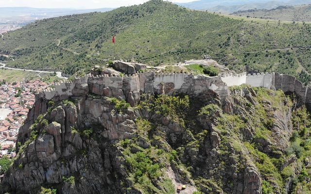
قلعة أفيون قره حصارأفيون قره حصار · حيثي – عثماني متحف وموقع ألاجا هويوك الأثريجوروم · العصر البرونزي / حيثي
متحف وموقع ألاجا هويوك الأثريجوروم · العصر البرونزي / حيثي تل العطشانة (ألالاخ)هاتاي · العصر البرونزي
تل العطشانة (ألالاخ)هاتاي · العصر البرونزي نفق دجلة (كهوف بيركلين)ديار بكر · Asur / أورارتي
نفق دجلة (كهوف بيركلين)ديار بكر · Asur / أورارتي نصب أفلاطون بينار الحيثيقونية · حيثي
نصب أفلاطون بينار الحيثيقونية · حيثي موقع إنكومي (ألاسيا) الأثريغازي ماغوسا (فاماغوستا) · العصر البرونزي
موقع إنكومي (ألاسيا) الأثريغازي ماغوسا (فاماغوستا) · العصر البرونزي قلعة إيغيل ومقامات الأنبياءديار بكر · Asur – عثماني
قلعة إيغيل ومقامات الأنبياءديار بكر · Asur – عثماني موقع تلوس الأثري (فتحية)موغلا · العصر البرونزي – عثماني
موقع تلوس الأثري (فتحية)موغلا · العصر البرونزي – عثماني موقع حران الأثريشانلي أورفا · العصر البرونزي – العصور الوسطى
موقع حران الأثريشانلي أورفا · العصر البرونزي – العصور الوسطى موقع ياسوس الأثريموغلا · العصر البرونزي – بيزنطي
موقع ياسوس الأثريموغلا · العصر البرونزي – بيزنطي متحف قامان قلعة هويوك الأثريقير شهر · العصر البرونزي / العصر الحديدي
متحف قامان قلعة هويوك الأثريقير شهر · العصر البرونزي / العصر الحديدي نقش كارابل الصخريإزمير · حيثي (Arzawa)
نقش كارابل الصخريإزمير · حيثي (Arzawa) متحف وموقع قره تبه – أصلان طاشعثمانية · الحيثي المتأخر (القرن 8 ق.م)
متحف وموقع قره تبه – أصلان طاشعثمانية · الحيثي المتأخر (القرن 8 ق.م)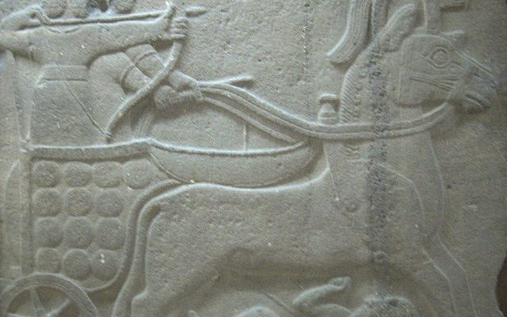
مدينة كركميش الأثريةغازي عنتاب · الحيثي المتأخر / العصر الحديدي موقع كول تبه الأثريقيصري · العصر البرونزي
موقع كول تبه الأثريقيصري · العصر البرونزي موقع سلاميس الأثريغازي ماغوسا (فاماغوستا) · العصر البرونزي / روماني / بيزنطي
موقع سلاميس الأثريغازي ماغوسا (فاماغوستا) · العصر البرونزي / روماني / بيزنطي غوزلوكوله في طرسوسمرسين · العصر البرونزي – روماني
غوزلوكوله في طرسوسمرسين · العصر البرونزي – روماني تيلمن هويوكغازي عنتاب · العصر البرونزي
تيلمن هويوكغازي عنتاب · العصر البرونزي موقع يسمك الأثريغازي عنتاب · الحيثي المتأخرتل يوموك تبهمرسين · العصر الحجري الحديث – العصور الوسطى
موقع يسمك الأثريغازي عنتاب · الحيثي المتأخرتل يوموك تبهمرسين · العصر الحجري الحديث – العصور الوسطى زنجيرلي هويوك (سمأل)غازي عنتاب · الحيثي المتأخر / Arami
زنجيرلي هويوك (سمأل)غازي عنتاب · الحيثي المتأخر / Arami شابينوفاجوروم · حيثي
شابينوفاجوروم · حيثي متحف بودروم لآثار ما تحت الماءموغلا · العصر البرونزي – عثماني
متحف بودروم لآثار ما تحت الماءموغلا · العصر البرونزي – عثماني متحف بوغاز كويجوروم · حيثيمتحف شانلي أورفا الأثريشانلي أورفا · العصر الحجري الحديث – عثماني
متحف بوغاز كويجوروم · حيثيمتحف شانلي أورفا الأثريشانلي أورفا · العصر الحجري الحديث – عثمانيممالك العصر الحديدي
ق.م 1200 – 550 · 64 مكانًا
موقع أرسلان تبه الأثريملطية · العصر النحاسي / العصر البرونزي / الحيثي المتأخر موقع زانثوس الأثريأنطاليا · ليكي
موقع زانثوس الأثريأنطاليا · ليكي متحف غورديونأنقرة · فريجيقلعة أفيون قره حصارأفيون قره حصار · حيثي – عثماني
متحف غورديونأنقرة · فريجيقلعة أفيون قره حصارأفيون قره حصار · حيثي – عثماني مقبرة أمينتاس الصخريةموغلا · ليكي (القرن 4 ق.م)
مقبرة أمينتاس الصخريةموغلا · ليكي (القرن 4 ق.م) مدينة أبيرلاي الأثريةأنطاليا · ليكي / روماني
مدينة أبيرلاي الأثريةأنطاليا · ليكي / روماني مدينة أبولونيا (ليكيا)أنطاليا · ليكي
مدينة أبولونيا (ليكيا)أنطاليا · ليكي موقع أريكاندا الأثريأنطاليا · ليكي / روماني
موقع أريكاندا الأثريأنطاليا · ليكي / روماني قلعة أيانيسوان · أورارتي
قلعة أيانيسوان · أورارتي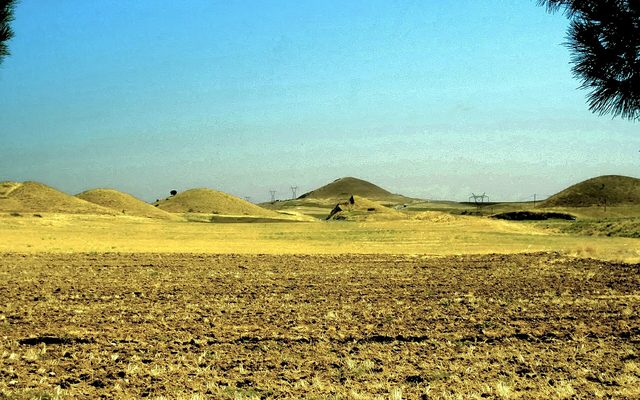
تلال بين تبه الليديةمانيسا · ليدي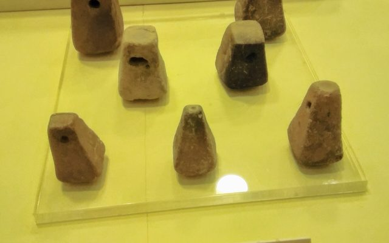
مدينة داسكيليون الأثريةباليكسير · Pers / هلنستينفق دجلة (كهوف بيركلين)ديار بكر · Asur / أورارتيقلعة إيغيل ومقامات الأنبياءديار بكر · Asur – عثماني موقع ليتون الأثري في فتحيةموغلا · ليكي / روماني
موقع ليتون الأثري في فتحيةموغلا · ليكي / روماني موقع بينارا الأثري في فتحيةموغلا · ليكي / رومانيموقع تلوس الأثري (فتحية)موغلا · العصر البرونزي – عثماني
موقع بينارا الأثري في فتحيةموغلا · ليكي / رومانيموقع تلوس الأثري (فتحية)موغلا · العصر البرونزي – عثماني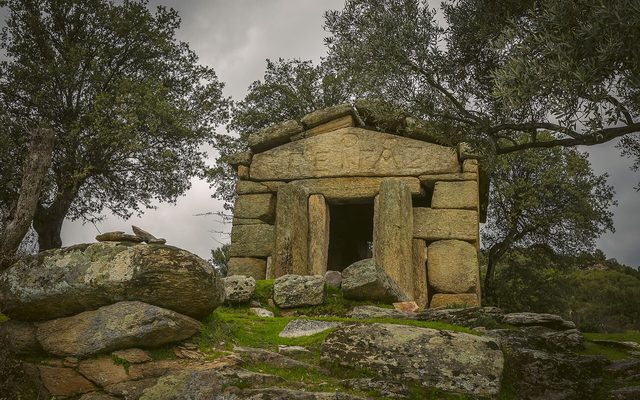
مقام غيرغاآيدن · كاري قلعة خربوطإلازيغ · أورارتي / العصور الوسطىموقع حران الأثريشانلي أورفا · العصر البرونزي – العصور الوسطىموقع ياسوس الأثريموغلا · العصر البرونزي – بيزنطي
قلعة خربوطإلازيغ · أورارتي / العصور الوسطىموقع حران الأثريشانلي أورفا · العصر البرونزي – العصور الوسطىموقع ياسوس الأثريموغلا · العصر البرونزي – بيزنطي مدينة كادياندا الأثريةموغلا · ليكي / رومانيمتحف قامان قلعة هويوك الأثريقير شهر · العصر البرونزي / العصر الحديديمتحف وموقع قره تبه – أصلان طاشعثمانية · الحيثي المتأخر (القرن 8 ق.م)مدينة كركميش الأثريةغازي عنتاب · الحيثي المتأخر / العصر الحديدي
مدينة كادياندا الأثريةموغلا · ليكي / رومانيمتحف قامان قلعة هويوك الأثريقير شهر · العصر البرونزي / العصر الحديديمتحف وموقع قره تبه – أصلان طاشعثمانية · الحيثي المتأخر (القرن 8 ق.م)مدينة كركميش الأثريةغازي عنتاب · الحيثي المتأخر / العصر الحديدي موقع كاونوس الأثريموغلا · كاري / هلنستي / روماني
موقع كاونوس الأثريموغلا · كاري / هلنستي / روماني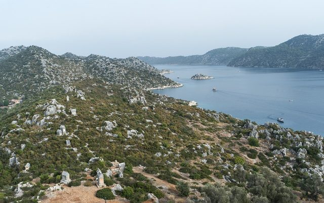
مدينة كيكوفا الغارقةأنطاليا · ليكي / روماني مدينة كيراموس الأثريةموغلا · كاري / روماني
مدينة كيراموس الأثريةموغلا · كاري / روماني مدينة كيركينيس الأثريةيوزغات · فريجي / العصر الحديديمتحف وموقع المقابر الملكيةغازي ماغوسا (فاماغوستا) · العصر الحديدي (القرن 8–7 ق.م)
مدينة كيركينيس الأثريةيوزغات · فريجي / العصر الحديديمتحف وموقع المقابر الملكيةغازي ماغوسا (فاماغوستا) · العصر الحديدي (القرن 8–7 ق.م) مدينة كيانيا الأثريةأنطاليا · ليكي / روماني
مدينة كيانيا الأثريةأنطاليا · ليكي / روماني موقع لابراوندا الأثريموغلا · كاري / هلنستي
موقع لابراوندا الأثريموغلا · كاري / هلنستي متحف الحضارات الليكية وموقع أندرياكي الأثريأنطاليا · ليكي / روماني
متحف الحضارات الليكية وموقع أندرياكي الأثريأنطاليا · ليكي / روماني موقع ليميرا الأثريأنطاليا · ليكي / روماني
موقع ليميرا الأثريأنطاليا · ليكي / روماني موقع مدينة ميداس الأثري (يازيلي قايا)إسكي شهر · فريجيضريح هيكاتومنوس (أوزون يوفا)موغلا · كاري
موقع مدينة ميداس الأثري (يازيلي قايا)إسكي شهر · فريجيضريح هيكاتومنوس (أوزون يوفا)موغلا · كاري مجمع ضريح أوزونيوفا والمتحف (ميلاس)موغلا · كاري (القرن 4 ق.م)
مجمع ضريح أوزونيوفا والمتحف (ميلاس)موغلا · كاري (القرن 4 ق.م) موقع ميرا الأثريأنطاليا · ليكي / رومانيمدينة أوينواندا الأثريةموغلا · ليكي / روماني
موقع ميرا الأثريأنطاليا · ليكي / رومانيمدينة أوينواندا الأثريةموغلا · ليكي / روماني موقع أوليمبوس الأثريأنطاليا · ليكي / روماني
موقع أوليمبوس الأثريأنطاليا · ليكي / روماني موقع باتارا الأثريأنطاليا · ليكي / روماني
موقع باتارا الأثريأنطاليا · ليكي / روماني موقع بيسينوس الأثريإسكي شهر · فريجي / هلنستي / روماني
موقع بيسينوس الأثريإسكي شهر · فريجي / هلنستي / روماني موقع فاسيليس الأثريأنطاليا · ليكي / روماني
موقع فاسيليس الأثريأنطاليا · ليكي / روماني مدينة فيلوس الأثريةأنطاليا · ليكي
مدينة فيلوس الأثريةأنطاليا · ليكي مدينة روديابوليس الأثريةأنطاليا · ليكي / روماني
مدينة روديابوليس الأثريةأنطاليا · ليكي / روماني موقع سارديس الأثريمانيسا · ليدي / روماني
موقع سارديس الأثريمانيسا · ليدي / روماني مدينة سيديما الأثريةموغلا · ليكي / روماني
مدينة سيديما الأثريةموغلا · ليكي / روماني موقع سيمينا الأثريأنطاليا · ليكي / بيزنطي
موقع سيمينا الأثريأنطاليا · ليكي / بيزنطي مدينة سورا الأثريةأنطاليا · ليكيغوزلوكوله في طرسوسمرسين · العصر البرونزي – روماني
مدينة سورا الأثريةأنطاليا · ليكيغوزلوكوله في طرسوسمرسين · العصر البرونزي – روماني مدينة تيميوسا الأثريةأنطاليا · ليكي
مدينة تيميوسا الأثريةأنطاليا · ليكي قلعة وانوان · أورارتي – عثمانيموقع يسمك الأثريغازي عنتاب · الحيثي المتأخرتل يوموك تبهمرسين · العصر الحجري الحديث – العصور الوسطى
قلعة وانوان · أورارتي – عثمانيموقع يسمك الأثريغازي عنتاب · الحيثي المتأخرتل يوموك تبهمرسين · العصر الحجري الحديث – العصور الوسطى قلعة الحية (يلان قلعة)أضنة · Kilikya Ermeni Krallığıزنجيرلي هويوك (سمأل)غازي عنتاب · الحيثي المتأخر / Arami
قلعة الحية (يلان قلعة)أضنة · Kilikya Ermeni Krallığıزنجيرلي هويوك (سمأل)غازي عنتاب · الحيثي المتأخر / Arami قلعة تشاوش تبهوان · أورارتي (القرن 8–7 ق.م)متحف بودروم لآثار ما تحت الماءموغلا · العصر البرونزي – عثماني
قلعة تشاوش تبهوان · أورارتي (القرن 8–7 ق.م)متحف بودروم لآثار ما تحت الماءموغلا · العصر البرونزي – عثماني متحف أرزنجانأرزنجان · أورارتي / متعدد الحقبمتحف فتحيةموغلا · ليكي / رومانيمتحف قرقلر ايليقرقلر ايلي · ما قبل التاريخ / تراقي
متحف أرزنجانأرزنجان · أورارتي / متعدد الحقبمتحف فتحيةموغلا · ليكي / رومانيمتحف قرقلر ايليقرقلر ايلي · ما قبل التاريخ / تراقي متحف ضريح موسولوس التذكاري في بودرومموغلا · كاري (القرن 4 ق.م)متحف أوشاكعشاق · ليدي / متعدد الحقب
متحف ضريح موسولوس التذكاري في بودرومموغلا · كاري (القرن 4 ق.م)متحف أوشاكعشاق · ليدي / متعدد الحقب متحف وانوان · أورارتي / متعدد الحقبمتحف شانلي أورفا الأثريشانلي أورفا · العصر الحجري الحديث – عثماني
متحف وانوان · أورارتي / متعدد الحقبمتحف شانلي أورفا الأثريشانلي أورفا · العصر الحجري الحديث – عثمانيالعصران الكلاسيكي والهلنستي
ق.م 550 – 30 · 89 مكانًا
 متحف وموقع أفروديسياس الأثريآيدن · هلنستي / روماني
متحف وموقع أفروديسياس الأثريآيدن · هلنستي / روماني أكروبوليس برغامومإزمير · هلنستي / روماني
أكروبوليس برغامومإزمير · هلنستي / روماني موقع أسكليبيون برغاموم الأثريإزمير · هلنستي / روماني
موقع أسكليبيون برغاموم الأثريإزمير · هلنستي / روماني أفسسإزمير · هلنستي / روماني
أفسسإزمير · هلنستي / روماني موقع هيرابوليس الأثري (باموكالي)دنيزلي · هلنستي / روماني
موقع هيرابوليس الأثري (باموكالي)دنيزلي · هلنستي / روماني جبل نمرودأديامان · هلنستي (كوماجيني)قلعة أفيون قره حصارأفيون قره حصار · حيثي – عثماني
جبل نمرودأديامان · هلنستي (كوماجيني)قلعة أفيون قره حصارأفيون قره حصار · حيثي – عثماني موقع أغورا سميرنا الأثريإزمير · هلنستي / رومانيموقع أيغاي الأثريمانيسا · هلنستي / روماني
موقع أغورا سميرنا الأثريإزمير · هلنستي / رومانيموقع أيغاي الأثريمانيسا · هلنستي / روماني موقع ألاباندا الأثريآيدن · هلنستي / روماني
موقع ألاباندا الأثريآيدن · هلنستي / روماني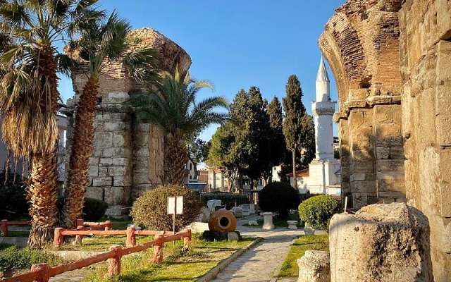
موقع آلاشهير الأثري (فيلادلفيا)مانيسا · هلنستي / بيزنطي موقع الإسكندرية ترواس الأثريجناق قلعة · هلنستي / روماني
موقع الإسكندرية ترواس الأثريجناق قلعة · هلنستي / روماني موقع أليندا الأثريآيدن · هلنستي / روماني
موقع أليندا الأثريآيدن · هلنستي / روماني تلة أميسوسسامسون · هلنستي
تلة أميسوسسامسون · هلنستي مدينة أموس الأثريةموغلا · هلنستي
مدينة أموس الأثريةموغلا · هلنستي مدينة سيدرا القديمةأنطاليا · هلنستي / روماني
مدينة سيدرا القديمةأنطاليا · هلنستي / روماني موقع أنطاكية بيسيديا الأثريإسبرطة · هلنستي / روماني
موقع أنطاكية بيسيديا الأثريإسبرطة · هلنستي / روماني موقع معبد أبولو سمينثيوسجناق قلعة · هلنستي
موقع معبد أبولو سمينثيوسجناق قلعة · هلنستي موقع أرساميا الأثريأديامان · هلنستي (كوماجيني)
موقع أرساميا الأثريأديامان · هلنستي (كوماجيني) موقع أسوس الأثريجناق قلعة · العصر القديم (الأركايكي) / هلنستي
موقع أسوس الأثريجناق قلعة · العصر القديم (الأركايكي) / هلنستي موقع بلاوندوس الأثريعشاق · هلنستي / روماني
موقع بلاوندوس الأثريعشاق · هلنستي / روماني مسرح بودروم القديمموغلا · هلنستي / رومانيمدينة داسكيليون الأثريةباليكسير · Pers / هلنستي
مسرح بودروم القديمموغلا · هلنستي / رومانيمدينة داسكيليون الأثريةباليكسير · Pers / هلنستي موقع تريبوليس الأثريدنيزلي · هلنستي / روماني
موقع تريبوليس الأثريدنيزلي · هلنستي / روماني معبد أبولو في ديديمآيدن · هلنستي / روماني
معبد أبولو في ديديمآيدن · هلنستي / روماني مدينة إريثراي الأثريةإزمير · هلنستي / رومانيقلعة إيغيل ومقامات الأنبياءديار بكر · Asur – عثمانيموقع تلوس الأثري (فتحية)موغلا · العصر البرونزي – عثمانيموقع فيليوس (تيوس) الأثريزونغولداق · هلنستي – بيزنطي
مدينة إريثراي الأثريةإزمير · هلنستي / رومانيقلعة إيغيل ومقامات الأنبياءديار بكر · Asur – عثمانيموقع تلوس الأثري (فتحية)موغلا · العصر البرونزي – عثمانيموقع فيليوس (تيوس) الأثريزونغولداق · هلنستي – بيزنطي غوليازي (أبولونيا عند ريندكوس)بورصة · هلنستي / رومانيموقع حران الأثريشانلي أورفا · العصر البرونزي – العصور الوسطى
غوليازي (أبولونيا عند ريندكوس)بورصة · هلنستي / رومانيموقع حران الأثريشانلي أورفا · العصر البرونزي – العصور الوسطى هيراكليا عند لاتموسموغلا · هلنستي / بيزنطيموقع ياسوس الأثريموغلا · العصر البرونزي – بيزنطيقلعة قديفة (جبل باغوس)إزمير · هلنستي / عثماني
هيراكليا عند لاتموسموغلا · هلنستي / بيزنطيموقع ياسوس الأثريموغلا · العصر البرونزي – بيزنطيقلعة قديفة (جبل باغوس)إزمير · هلنستي / عثماني قلعة يني قلعة في كاهتاأديامان · كوماجيني / العصور الوسطى
قلعة يني قلعة في كاهتاأديامان · كوماجيني / العصور الوسطى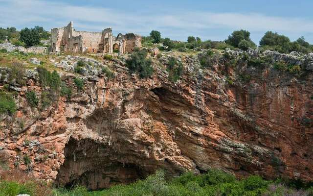
موقع قانلي ديوانه الأثريمرسين · هلنستي / روماني / بيزنطي قانلي ديوانه (كانيتيليس)مرسين · هلنستي / بيزنطي
قانلي ديوانه (كانيتيليس)مرسين · هلنستي / بيزنطي تل قره قوشأديامان · كوماجيني
تل قره قوشأديامان · كوماجيني موقع كاستابالا الأثريعثمانية · هلنستي / روماني / العصور الوسطىموقع كاونوس الأثريموغلا · كاري / هلنستي / روماني
موقع كاستابالا الأثريعثمانية · هلنستي / روماني / العصور الوسطىموقع كاونوس الأثريموغلا · كاري / هلنستي / روماني موقع كلاروس الأثريإزمير · العصر القديم (الأركايكي) / رومانيموقع كلازوميناي الأثريإزمير · العصر القديم (الأركايكي)
موقع كلاروس الأثريإزمير · العصر القديم (الأركايكي) / رومانيموقع كلازوميناي الأثريإزمير · العصر القديم (الأركايكي)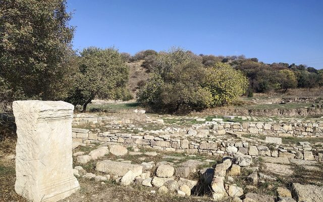
مدينة كيمي الأثريةإزمير · العصر القديم (الأركايكي) / روماني مدينة كيزيكوس الأثريةباليكسير · هلنستي / رومانيموقع لابراوندا الأثريموغلا · كاري / هلنستي
مدينة كيزيكوس الأثريةباليكسير · هلنستي / رومانيموقع لابراوندا الأثريموغلا · كاري / هلنستي موقع لاغينا الأثريموغلا · هلنستي / روماني
موقع لاغينا الأثريموغلا · هلنستي / روماني موقع لاودكية الأثريدنيزلي · هلنستي / روماني
موقع لاودكية الأثريدنيزلي · هلنستي / روماني قلعة لوريماموغلا · هلنستي
قلعة لوريماموغلا · هلنستي مدينة ماغارسوس الأثريةأضنة · هلنستي / روماني
مدينة ماغارسوس الأثريةأضنة · هلنستي / روماني موقع ماغنيسيا الأثريآيدن · هلنستي / روماني
موقع ماغنيسيا الأثريآيدن · هلنستي / روماني متحف آق حصار ومقبرة تبه في مانيسامانيسا · هلنستي / روماني
متحف آق حصار ومقبرة تبه في مانيسامانيسا · هلنستي / روماني موقع ميتروبوليس الأثريإزمير · هلنستي / روماني
موقع ميتروبوليس الأثريإزمير · هلنستي / روماني موقع يوروموس الأثري في ميلاسموغلا · هلنستي / روماني
موقع يوروموس الأثري في ميلاسموغلا · هلنستي / روماني موقع ميليتوس الأثريآيدن · العصر القديم (الأركايكي) / روماني
موقع ميليتوس الأثريآيدن · العصر القديم (الأركايكي) / روماني موقع كنيدوس الأثريموغلا · كلاسيكي / هلنستي
موقع كنيدوس الأثريموغلا · كلاسيكي / هلنستي مدينة ميندوس الأثريةموغلا · هلنستي
مدينة ميندوس الأثريةموغلا · هلنستي مدينة نوتيون الأثريةإزمير · هلنستي / روماني
مدينة نوتيون الأثريةإزمير · هلنستي / روماني موقع نيسا الأثري (سلطان حصار)آيدن · هلنستي / روماني
موقع نيسا الأثري (سلطان حصار)آيدن · هلنستي / روماني مدينة أولبا الأثريةمرسين · هلنستي / روماني
مدينة أولبا الأثريةمرسين · هلنستي / روماني مدينة باريون الأثريةجناق قلعة · هلنستي / روماني
مدينة باريون الأثريةجناق قلعة · هلنستي / روماني موقع بيرغه الأثريأنطاليا · هلنستي / روماني
موقع بيرغه الأثريأنطاليا · هلنستي / روماني موقع بيري الأثريأديامان · كوماجيني / رومانيموقع بيسينوس الأثريإسكي شهر · فريجي / هلنستي / روماني
موقع بيري الأثريأديامان · كوماجيني / رومانيموقع بيسينوس الأثريإسكي شهر · فريجي / هلنستي / روماني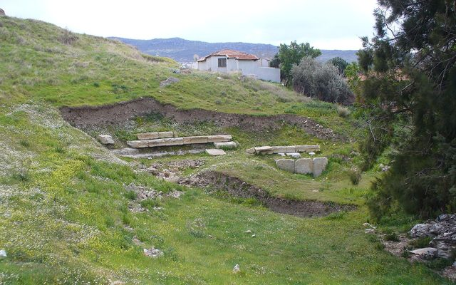
فوكايا (فوتشا)إزمير · العصر القديم (الأركايكي) / روماني أنطاكية بيسيدياإسبرطة · هلنستي / روماني
أنطاكية بيسيدياإسبرطة · هلنستي / روماني موقع برييني الأثريآيدن · هلنستي
موقع برييني الأثريآيدن · هلنستي موقع ساغالاسوس الأثريبوردور · هلنستي / روماني
موقع ساغالاسوس الأثريبوردور · هلنستي / روماني جزيرة سيدير (كيدرياي)موغلا · هلنستي / روماني
جزيرة سيدير (كيدرياي)موغلا · هلنستي / روماني سلوقية بامفيلياأنطاليا · هلنستي / روماني
سلوقية بامفيلياأنطاليا · هلنستي / روماني مدينة سيلغه الأثريةأنطاليا · هلنستي / روماني
مدينة سيلغه الأثريةأنطاليا · هلنستي / روماني موقع سيده الأثريأنطاليا · هلنستي / روماني
موقع سيده الأثريأنطاليا · هلنستي / روماني مدينة سيليون الأثريةأنطاليا · هلنستي / رومانيضريح صوفراز التذكاريأديامان · هلنستي / روماني
مدينة سيليون الأثريةأنطاليا · هلنستي / رومانيضريح صوفراز التذكاريأديامان · هلنستي / روماني سولي بومبيوبوليسمرسين · هلنستي / روماني
سولي بومبيوبوليسمرسين · هلنستي / روماني موقع سولي الأثريليفكه (ليفكا) · العصر القديم (الأركايكي) / روماني
موقع سولي الأثريليفكه (ليفكا) · العصر القديم (الأركايكي) / روماني موقع ستراتونيكيا الأثريموغلا · هلنستي – عثمانيغوزلوكوله في طرسوسمرسين · العصر البرونزي – روماني
موقع ستراتونيكيا الأثريموغلا · هلنستي – عثمانيغوزلوكوله في طرسوسمرسين · العصر البرونزي – روماني موقع تيوس الأثريإزمير · العصر القديم (الأركايكي) / هلنستي
موقع تيوس الأثريإزمير · العصر القديم (الأركايكي) / هلنستي موقع ترميسوس الأثريأنطاليا · هلنستي / روماني
موقع ترميسوس الأثريأنطاليا · هلنستي / روماني مدينة ترالليس الأثريةآيدن · هلنستي / روماني
مدينة ترالليس الأثريةآيدن · هلنستي / روماني موقع أوزونجه بورج الأثريمرسين · هلنستي / رومانيقلعة وانوان · أورارتي – عثماني
موقع أوزونجه بورج الأثريمرسين · هلنستي / رومانيقلعة وانوان · أورارتي – عثماني قصر فونيليفكه (ليفكا) · كلاسيكي (القرن 5 ق.م)تل يوموك تبهمرسين · العصر الحجري الحديث – العصور الوسطى
قصر فونيليفكه (ليفكا) · كلاسيكي (القرن 5 ق.م)تل يوموك تبهمرسين · العصر الحجري الحديث – العصور الوسطى موقع زيوغما الأثريغازي عنتاب · هلنستي / رومانيموقع تشفليك الأثريهاتاي · هلنستي / روماني
موقع زيوغما الأثريغازي عنتاب · هلنستي / رومانيموقع تشفليك الأثريهاتاي · هلنستي / روماني قلعة شانلي أورفاشانلي أورفا · هلنستي – العصور الوسطىمتحف بودروم لآثار ما تحت الماءموغلا · العصر البرونزي – عثمانيمتحف شانلي أورفا الأثريشانلي أورفا · العصر الحجري الحديث – عثماني
قلعة شانلي أورفاشانلي أورفا · هلنستي – العصور الوسطىمتحف بودروم لآثار ما تحت الماءموغلا · العصر البرونزي – عثمانيمتحف شانلي أورفا الأثريشانلي أورفا · العصر الحجري الحديث – عثمانيالعصر الروماني
ق.م 30 – م 330 · 152 مكانًا
متحف وموقع أفروديسياس الأثريآيدن · هلنستي / رومانيأكروبوليس برغامومإزمير · هلنستي / رومانيموقع أسكليبيون برغاموم الأثريإزمير · هلنستي / روماني البازيليكا الحمراء في برغامةإزمير · روماني / بيزنطيأفسسإزمير · هلنستي / رومانيموقع هيرابوليس الأثري (باموكالي)دنيزلي · هلنستي / رومانيطروادةجناق قلعة · العصر البرونزي / روماني
البازيليكا الحمراء في برغامةإزمير · روماني / بيزنطيأفسسإزمير · هلنستي / رومانيموقع هيرابوليس الأثري (باموكالي)دنيزلي · هلنستي / رومانيطروادةجناق قلعة · العصر البرونزي / روماني مدينة أدادا الأثريةإسبرطة · روماني
مدينة أدادا الأثريةإسبرطة · روماني آدم قايالارمرسين · رومانيقلعة أفيون قره حصارأفيون قره حصار · حيثي – عثمانيموقع أغورا سميرنا الأثريإزمير · هلنستي / رومانيموقع أيغاي الأثريمانيسا · هلنستي / روماني
آدم قايالارمرسين · رومانيقلعة أفيون قره حصارأفيون قره حصار · حيثي – عثمانيموقع أغورا سميرنا الأثريإزمير · هلنستي / رومانيموقع أيغاي الأثريمانيسا · هلنستي / روماني موقع أيزانوي الأثريكوتاهية · رومانيموقع ألاباندا الأثريآيدن · هلنستي / رومانيموقع الإسكندرية ترواس الأثريجناق قلعة · هلنستي / رومانيموقع أليندا الأثريآيدن · هلنستي / روماني
موقع أيزانوي الأثريكوتاهية · رومانيموقع ألاباندا الأثريآيدن · هلنستي / رومانيموقع الإسكندرية ترواس الأثريجناق قلعة · هلنستي / رومانيموقع أليندا الأثريآيدن · هلنستي / روماني مدينة عمورية الأثريةأفيون قره حصار · روماني / بيزنطي
مدينة عمورية الأثريةأفيون قره حصار · روماني / بيزنطي موقع أنافارزا الأثريأضنة · روماني / بيزنطي
موقع أنافارزا الأثريأضنة · روماني / بيزنطي موقع أنيموريوم الأثريمرسين · روماني / بيزنطي
موقع أنيموريوم الأثريمرسين · روماني / بيزنطي قلعة أنقرةأنقرة · روماني – عثماني
قلعة أنقرةأنقرة · روماني – عثماني المسرح الروماني في أنقرةأنقرة · رومانيمدينة سيدرا القديمةأنطاليا · هلنستي / روماني
المسرح الروماني في أنقرةأنقرة · رومانيمدينة سيدرا القديمةأنطاليا · هلنستي / روماني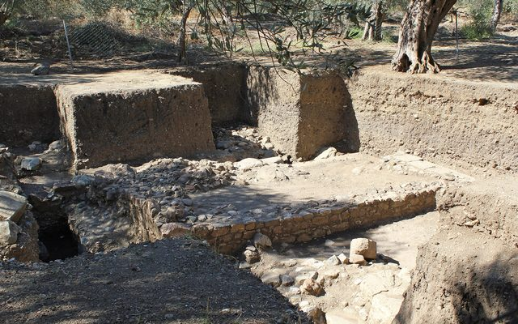
مدينة أنتاندروس الأثريةباليكسير · رومانيموقع أنطاكية بيسيديا الأثريإسبرطة · هلنستي / روماني أنطاكية عند كراغوسأنطاليا · رومانيمدينة أبيرلاي الأثريةأنطاليا · ليكي / روماني
أنطاكية عند كراغوسأنطاليا · رومانيمدينة أبيرلاي الأثريةأنطاليا · ليكي / روماني مدينة أرياسوس الأثريةأنطاليا · رومانيموقع أريكاندا الأثريأنطاليا · ليكي / روماني
مدينة أرياسوس الأثريةأنطاليا · رومانيموقع أريكاندا الأثريأنطاليا · ليكي / روماني أسبندوسأنطاليا · روماني
أسبندوسأنطاليا · روماني معبد أغسطسأنقرة · رومانيمدينة بالبورا الأثريةبوردور · رومانيموقع بلاوندوس الأثريعشاق · هلنستي / رومانيمسرح بودروم القديمموغلا · هلنستي / روماني
معبد أغسطسأنقرة · رومانيمدينة بالبورا الأثريةبوردور · رومانيموقع بلاوندوس الأثريعشاق · هلنستي / رومانيمسرح بودروم القديمموغلا · هلنستي / روماني قناطر بوزدوغان (قناة فالنس)إسطنبول · روماني
قناطر بوزدوغان (قناة فالنس)إسطنبول · روماني جسر جندرهأديامان · رومانيموقع تريبوليس الأثريدنيزلي · هلنستي / رومانيمعبد أبولو في ديديمآيدن · هلنستي / روماني
جسر جندرهأديامان · رومانيموقع تريبوليس الأثريدنيزلي · هلنستي / رومانيمعبد أبولو في ديديمآيدن · هلنستي / روماني أسوار ديار بكرديار بكر · روماني – عثماني
أسوار ديار بكرديار بكر · روماني – عثماني البرج المقدوني في أدرنةأدرنة · روماني / بيزنطي / عثماني
البرج المقدوني في أدرنةأدرنة · روماني / بيزنطي / عثماني بيوت المنحدر في أفسسإزمير · روماني / بيزنطي
بيوت المنحدر في أفسسإزمير · روماني / بيزنطي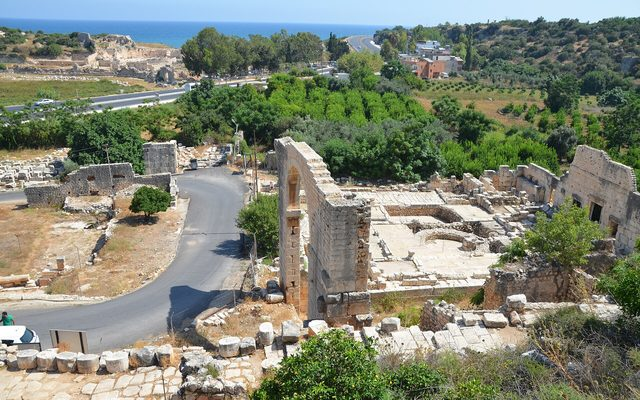
إلايوسا سيباستيمرسين · رومانيمدينة إريثراي الأثريةإزمير · هلنستي / رومانيقلعة إيغيل ومقامات الأنبياءديار بكر · Asur – عثمانيموقع ليتون الأثري في فتحيةموغلا · ليكي / رومانيموقع بينارا الأثري في فتحيةموغلا · ليكي / رومانيموقع تلوس الأثري (فتحية)موغلا · العصر البرونزي – عثمانيموقع فيليوس (تيوس) الأثريزونغولداق · هلنستي – بيزنطيمنطقة فسيفساء جرمانيكياقهرمان مرعش · رومانيغوليازي (أبولونيا عند ريندكوس)بورصة · هلنستي / روماني ضريح غوموش كسنموغلا · روماني
ضريح غوموش كسنموغلا · روماني بوابة هادريان (الأبواب الثلاثة)أنطاليا · رومانيموقع هادريانوبوليس الأثريكارابوك · روماني / بيزنطيموقع حران الأثريشانلي أورفا · العصر البرونزي – العصور الوسطىموقع ياسوس الأثريموغلا · العصر البرونزي – بيزنطي
بوابة هادريان (الأبواب الثلاثة)أنطاليا · رومانيموقع هادريانوبوليس الأثريكارابوك · روماني / بيزنطيموقع حران الأثريشانلي أورفا · العصر البرونزي – العصور الوسطىموقع ياسوس الأثريموغلا · العصر البرونزي – بيزنطي مدينة يوتابي الأثريةأنطاليا · رومانيمدينة كادياندا الأثريةموغلا · ليكي / رومانيموقع قانلي ديوانه الأثريمرسين · هلنستي / روماني / بيزنطيموقع كاستابالا الأثريعثمانية · هلنستي / روماني / العصور الوسطىموقع كاونوس الأثريموغلا · كاري / هلنستي / روماني
مدينة يوتابي الأثريةأنطاليا · رومانيمدينة كادياندا الأثريةموغلا · ليكي / رومانيموقع قانلي ديوانه الأثريمرسين · هلنستي / روماني / بيزنطيموقع كاستابالا الأثريعثمانية · هلنستي / روماني / العصور الوسطىموقع كاونوس الأثريموغلا · كاري / هلنستي / روماني قلعة قيصريقيصري · روماني / سلجوقيمدينة كيكوفا الغارقةأنطاليا · ليكي / روماني
قلعة قيصريقيصري · روماني / سلجوقيمدينة كيكوفا الغارقةأنطاليا · ليكي / روماني مدينة كيليندريس الأثريةمرسين · رومانيمدينة كيراموس الأثريةموغلا · كاري / روماني
مدينة كيليندريس الأثريةمرسين · رومانيمدينة كيراموس الأثريةموغلا · كاري / روماني موقع كيبيرا الأثريبوردور · روماني
موقع كيبيرا الأثريبوردور · روماني كيليستراقونية · روماني / بيزنطيموقع كلاروس الأثريإزمير · العصر القديم (الأركايكي) / روماني
كيليستراقونية · روماني / بيزنطيموقع كلاروس الأثريإزمير · العصر القديم (الأركايكي) / روماني كوريكوس وقيز قلعةمرسين · روماني / العصور الوسطى
كوريكوس وقيز قلعةمرسين · روماني / العصور الوسطى مدينة كريمنا الأثريةبوردور · رومانيمدينة كيانيا الأثريةأنطاليا · ليكي / رومانيمدينة كيمي الأثريةإزمير · العصر القديم (الأركايكي) / رومانيمدينة كيزيكوس الأثريةباليكسير · هلنستي / روماني
مدينة كريمنا الأثريةبوردور · رومانيمدينة كيانيا الأثريةأنطاليا · ليكي / رومانيمدينة كيمي الأثريةإزمير · العصر القديم (الأركايكي) / رومانيمدينة كيزيكوس الأثريةباليكسير · هلنستي / روماني جسر كوبرو بازار (أسبندوس)أنطاليا · روماني / سلجوقيموقع لاغينا الأثريموغلا · هلنستي / رومانيموقع لاودكية الأثريدنيزلي · هلنستي / رومانيمتحف الحضارات الليكية وموقع أندرياكي الأثريأنطاليا · ليكي / رومانيموقع ليميرا الأثريأنطاليا · ليكي / رومانيمدينة ماغارسوس الأثريةأضنة · هلنستي / رومانيموقع ماغنيسيا الأثريآيدن · هلنستي / رومانيمتحف آق حصار ومقبرة تبه في مانيسامانيسا · هلنستي / رومانيموقع ميتروبوليس الأثريإزمير · هلنستي / رومانيموقع يوروموس الأثري في ميلاسموغلا · هلنستي / رومانيموقع ميليتوس الأثريآيدن · العصر القديم (الأركايكي) / روماني
جسر كوبرو بازار (أسبندوس)أنطاليا · روماني / سلجوقيموقع لاغينا الأثريموغلا · هلنستي / رومانيموقع لاودكية الأثريدنيزلي · هلنستي / رومانيمتحف الحضارات الليكية وموقع أندرياكي الأثريأنطاليا · ليكي / رومانيموقع ليميرا الأثريأنطاليا · ليكي / رومانيمدينة ماغارسوس الأثريةأضنة · هلنستي / رومانيموقع ماغنيسيا الأثريآيدن · هلنستي / رومانيمتحف آق حصار ومقبرة تبه في مانيسامانيسا · هلنستي / رومانيموقع ميتروبوليس الأثريإزمير · هلنستي / رومانيموقع يوروموس الأثري في ميلاسموغلا · هلنستي / رومانيموقع ميليتوس الأثريآيدن · العصر القديم (الأركايكي) / روماني المصيصة (موبسويستيا)أضنة · روماني / بيزنطيموقع ميرا الأثريأنطاليا · ليكي / رومانيموقع أنداوال الأثري (نيغده)نيغدة · روماني / بيزنطيمدينة نوتيون الأثريةإزمير · هلنستي / رومانيموقع نيسا الأثري (سلطان حصار)آيدن · هلنستي / رومانيمدينة أوينواندا الأثريةموغلا · ليكي / رومانيمدينة أولبا الأثريةمرسين · هلنستي / رومانيموقع أوليمبوس الأثريأنطاليا · ليكي / رومانيمدينة باريون الأثريةجناق قلعة · هلنستي / رومانيموقع باتارا الأثريأنطاليا · ليكي / رومانيموقع بيرغه الأثريأنطاليا · هلنستي / رومانيموقع بيري الأثريأديامان · كوماجيني / رومانيموقع بيسينوس الأثريإسكي شهر · فريجي / هلنستي / رومانيموقع فاسيليس الأثريأنطاليا · ليكي / رومانيفوكايا (فوتشا)إزمير · العصر القديم (الأركايكي) / رومانيأنطاكية بيسيدياإسبرطة · هلنستي / رومانيمدينة بومبيوبوليس (بافلاغونيا)قسطموني · روماني
المصيصة (موبسويستيا)أضنة · روماني / بيزنطيموقع ميرا الأثريأنطاليا · ليكي / رومانيموقع أنداوال الأثري (نيغده)نيغدة · روماني / بيزنطيمدينة نوتيون الأثريةإزمير · هلنستي / رومانيموقع نيسا الأثري (سلطان حصار)آيدن · هلنستي / رومانيمدينة أوينواندا الأثريةموغلا · ليكي / رومانيمدينة أولبا الأثريةمرسين · هلنستي / رومانيموقع أوليمبوس الأثريأنطاليا · ليكي / رومانيمدينة باريون الأثريةجناق قلعة · هلنستي / رومانيموقع باتارا الأثريأنطاليا · ليكي / رومانيموقع بيرغه الأثريأنطاليا · هلنستي / رومانيموقع بيري الأثريأديامان · كوماجيني / رومانيموقع بيسينوس الأثريإسكي شهر · فريجي / هلنستي / رومانيموقع فاسيليس الأثريأنطاليا · ليكي / رومانيفوكايا (فوتشا)إزمير · العصر القديم (الأركايكي) / رومانيأنطاكية بيسيدياإسبرطة · هلنستي / رومانيمدينة بومبيوبوليس (بافلاغونيا)قسطموني · روماني بروسياس عند هيبيوس (قونور ألب)دوزجه · رومانيمدينة روديابوليس الأثريةأنطاليا · ليكي / روماني
بروسياس عند هيبيوس (قونور ألب)دوزجه · رومانيمدينة روديابوليس الأثريةأنطاليا · ليكي / روماني الحمامات الرومانية في أنقرةأنقرة · رومانيموقع ساغالاسوس الأثريبوردور · هلنستي / رومانيموقع سلاميس الأثريغازي ماغوسا (فاماغوستا) · العصر البرونزي / روماني / بيزنطيموقع سارديس الأثريمانيسا · ليدي / روماني
الحمامات الرومانية في أنقرةأنقرة · رومانيموقع ساغالاسوس الأثريبوردور · هلنستي / رومانيموقع سلاميس الأثريغازي ماغوسا (فاماغوستا) · العصر البرونزي / روماني / بيزنطيموقع سارديس الأثريمانيسا · ليدي / روماني حمّام صاري قايا الرومانييوزغات · روماني
حمّام صاري قايا الرومانييوزغات · روماني ساتالاغوموشهانه · رومانيجزيرة سيدير (كيدرياي)موغلا · هلنستي / رومانيسلوقية بامفيلياأنطاليا · هلنستي / رومانيمدينة سيلغه الأثريةأنطاليا · هلنستي / روماني
ساتالاغوموشهانه · رومانيجزيرة سيدير (كيدرياي)موغلا · هلنستي / رومانيسلوقية بامفيلياأنطاليا · هلنستي / رومانيمدينة سيلغه الأثريةأنطاليا · هلنستي / روماني مدينة سيلينوس الأثريةأنطاليا · رومانيموقع سيده الأثريأنطاليا · هلنستي / رومانيمدينة سيديما الأثريةموغلا · ليكي / رومانيمدينة سيليون الأثريةأنطاليا · هلنستي / روماني
مدينة سيلينوس الأثريةأنطاليا · رومانيموقع سيده الأثريأنطاليا · هلنستي / رومانيمدينة سيديما الأثريةموغلا · ليكي / رومانيمدينة سيليون الأثريةأنطاليا · هلنستي / روماني مدينة سوبيسوس الأثريةنوشهر · روماني / بيزنطيموقع سوبيسوس الأثرينوشهر · روماني / بيزنطيضريح صوفراز التذكاريأديامان · هلنستي / رومانيسولي بومبيوبوليسمرسين · هلنستي / رومانيموقع سولي الأثريليفكه (ليفكا) · العصر القديم (الأركايكي) / رومانيسوغماتارشانلي أورفا · روماني / Sabiiموقع ستراتونيكيا الأثريموغلا · هلنستي – عثماني
مدينة سوبيسوس الأثريةنوشهر · روماني / بيزنطيموقع سوبيسوس الأثرينوشهر · روماني / بيزنطيضريح صوفراز التذكاريأديامان · هلنستي / رومانيسولي بومبيوبوليسمرسين · هلنستي / رومانيموقع سولي الأثريليفكه (ليفكا) · العصر القديم (الأركايكي) / رومانيسوغماتارشانلي أورفا · روماني / Sabiiموقع ستراتونيكيا الأثريموغلا · هلنستي – عثماني ساحة السلطان أحمد (ميدان سباق الخيل)إسطنبول · روماني / بيزنطيغوزلوكوله في طرسوسمرسين · العصر البرونزي – روماني
ساحة السلطان أحمد (ميدان سباق الخيل)إسطنبول · روماني / بيزنطيغوزلوكوله في طرسوسمرسين · العصر البرونزي – روماني بوابة كليوباترا والطريق القديم في طرسوسمرسين · روماني
بوابة كليوباترا والطريق القديم في طرسوسمرسين · روماني بئر القديس بولس في طرسوسمرسين · روماني / المسيحية المبكرة
بئر القديس بولس في طرسوسمرسين · روماني / المسيحية المبكرة الجسر الحجري (طاش كوبري)أضنة · رومانيموقع ترميسوس الأثريأنطاليا · هلنستي / روماني
الجسر الحجري (طاش كوبري)أضنة · رومانيموقع ترميسوس الأثريأنطاليا · هلنستي / روماني نفق تيتوس (فسبازيان)هاتاي · رومانيمدينة ترالليس الأثريةآيدن · هلنستي / روماني
نفق تيتوس (فسبازيان)هاتاي · رومانيمدينة ترالليس الأثريةآيدن · هلنستي / روماني تيانا والحوض الروماني في كمرحصارنيغدة · رومانيموقع أوزونجه بورج الأثريمرسين · هلنستي / رومانيقلعة وانوان · أورارتي – عثمانيتل يوموك تبهمرسين · العصر الحجري الحديث – العصور الوسطى
تيانا والحوض الروماني في كمرحصارنيغدة · رومانيموقع أوزونجه بورج الأثريمرسين · هلنستي / رومانيقلعة وانوان · أورارتي – عثمانيتل يوموك تبهمرسين · العصر الحجري الحديث – العصور الوسطى قلعة زرزوانديار بكر · رومانيموقع زيوغما الأثريغازي عنتاب · هلنستي / روماني
قلعة زرزوانديار بكر · رومانيموقع زيوغما الأثريغازي عنتاب · هلنستي / روماني عمود قسطنطين (جمبرلي طاش)إسطنبول · روماني / بيزنطيموقع تشفليك الأثريهاتاي · هلنستي / رومانيقلعة شانلي أورفاشانلي أورفا · هلنستي – العصور الوسطىمدينة شعيبشانلي أورفا · روماني / İslamiمتحف بودروم لآثار ما تحت الماءموغلا · العصر البرونزي – عثمانيمتحف فتحيةموغلا · ليكي / روماني
عمود قسطنطين (جمبرلي طاش)إسطنبول · روماني / بيزنطيموقع تشفليك الأثريهاتاي · هلنستي / رومانيقلعة شانلي أورفاشانلي أورفا · هلنستي – العصور الوسطىمدينة شعيبشانلي أورفا · روماني / İslamiمتحف بودروم لآثار ما تحت الماءموغلا · العصر البرونزي – عثمانيمتحف فتحيةموغلا · ليكي / روماني متحف فسيفساء حلبي باغجهشانلي أورفا · روماني / بيزنطي
متحف فسيفساء حلبي باغجهشانلي أورفا · روماني / بيزنطي متحف هاتاي الأثريهاتاي · روماني / متعدد الحقب
متحف هاتاي الأثريهاتاي · روماني / متعدد الحقب متحف هيرابوليس الأثري (باموكالي)دنيزلي · رومانيمتحف قوجه ايلي الأثريقوجه ايلي · روماني / متعدد الحقب
متحف هيرابوليس الأثري (باموكالي)دنيزلي · رومانيمتحف قوجه ايلي الأثريقوجه ايلي · روماني / متعدد الحقب متحف قونور ألبدوزجه · روماني
متحف قونور ألبدوزجه · روماني متحف فسيفساء المصيصةأضنة · روماني
متحف فسيفساء المصيصةأضنة · روماني متحف سيدهأنطاليا · روماني
متحف سيدهأنطاليا · روماني متحف نارلي كويو للفسيفساء في سيليفكهمرسين · روماني
متحف نارلي كويو للفسيفساء في سيليفكهمرسين · روماني متحف يالواجإسبرطة · روماني / متعدد الحقب
متحف يالواجإسبرطة · روماني / متعدد الحقب متحف زيوغما للفسيفساءغازي عنتاب · رومانيمتحف شانلي أورفا الأثريشانلي أورفا · العصر الحجري الحديث – عثماني
متحف زيوغما للفسيفساءغازي عنتاب · رومانيمتحف شانلي أورفا الأثريشانلي أورفا · العصر الحجري الحديث – عثمانيالبيزنطيون والعصور الوسطى
330 – 1453 · 138 مكانًا
 موقع آني الأثريقارص · العصور الوسطىالبازيليكا الحمراء في برغامةإزمير · روماني / بيزنطي
موقع آني الأثريقارص · العصور الوسطىالبازيليكا الحمراء في برغامةإزمير · روماني / بيزنطي مدينة ديرينكويو تحت الأرضنوشهر · بيزنطي
مدينة ديرينكويو تحت الأرضنوشهر · بيزنطي كنيسة النظرنوشهر · بيزنطي (القرن 10)
كنيسة النظرنوشهر · بيزنطي (القرن 10) متحف غوريمي المفتوحنوشهر · بيزنطي (القرن 9–12)
متحف غوريمي المفتوحنوشهر · بيزنطي (القرن 9–12) الكنيسة المظلمة (غوريمي)نوشهر · بيزنطي (القرن 11)
الكنيسة المظلمة (غوريمي)نوشهر · بيزنطي (القرن 11) مدينة قايماقلي تحت الأرضنوشهر · بيزنطي
مدينة قايماقلي تحت الأرضنوشهر · بيزنطي موقع زلفه وباشا باغلارينوشهر · بيزنطي / عثماني
موقع زلفه وباشا باغلارينوشهر · بيزنطي / عثماني تشافوشين (كنيسة تشافوشين)نوشهر · بيزنطيقلعة أفيون قره حصارأفيون قره حصار · حيثي – عثمانيوادي الأديرة في آق سرايآق سراي · بيزنطي
تشافوشين (كنيسة تشافوشين)نوشهر · بيزنطيقلعة أفيون قره حصارأفيون قره حصار · حيثي – عثمانيوادي الأديرة في آق سرايآق سراي · بيزنطي دير علاهانمرسين · بيزنطيموقع آلاشهير الأثري (فيلادلفيا)مانيسا · هلنستي / بيزنطي
دير علاهانمرسين · بيزنطيموقع آلاشهير الأثري (فيلادلفيا)مانيسا · هلنستي / بيزنطي قلعة أماسرابارطن · بيزنطي / جنويمدينة عمورية الأثريةأفيون قره حصار · روماني / بيزنطيموقع أنافارزا الأثريأضنة · روماني / بيزنطيموقع أنيموريوم الأثريمرسين · روماني / بيزنطيقلعة أنقرةأنقرة · روماني – عثماني
قلعة أماسرابارطن · بيزنطي / جنويمدينة عمورية الأثريةأفيون قره حصار · روماني / بيزنطيموقع أنافارزا الأثريأضنة · روماني / بيزنطيموقع أنيموريوم الأثريمرسين · روماني / بيزنطيقلعة أنقرةأنقرة · روماني – عثماني كنيسة أنتيفونيتيسغيرنه (كيرينيا) · بيزنطي (القرن 12)
كنيسة أنتيفونيتيسغيرنه (كيرينيا) · بيزنطي (القرن 12) دير الرسول أندراوسإسكله (تريكومو) · بيزنطي / عثماني
دير الرسول أندراوسإسكله (تريكومو) · بيزنطي / عثماني كنيسة آيا إيرينيإسطنبول · بيزنطي (القرن 6)
كنيسة آيا إيرينيإسطنبول · بيزنطي (القرن 6) قلعة إياس (يومورطاليك)أضنة · العصور الوسطى
قلعة إياس (يومورطاليك)أضنة · العصور الوسطى جامع آيا صوفيا الكبيرإسطنبول · بيزنطي / عثماني
جامع آيا صوفيا الكبيرإسطنبول · بيزنطي / عثماني موقع بازيليكا القديس يوحنا (أياسولوك)إزمير · بيزنطي
موقع بازيليكا القديس يوحنا (أياسولوك)إزمير · بيزنطي قلعة أياسولوكإزمير · بيزنطي / الإمارات الأناضوليةبازيليكا آيا ترياسإسكله (تريكومو) · المسيحية المبكرةمدينة القديس مركوريوس تحت الأرضآق سراي · بيزنطي
قلعة أياسولوكإزمير · بيزنطي / الإمارات الأناضوليةبازيليكا آيا ترياسإسكله (تريكومو) · المسيحية المبكرةمدينة القديس مركوريوس تحت الأرضآق سراي · بيزنطي قلعة بغراسهاتاي · العصور الوسطى
قلعة بغراسهاتاي · العصور الوسطى بركة إبراهيم (بالِقلي غول)شانلي أورفا · العصور الوسطى / عثماني
بركة إبراهيم (بالِقلي غول)شانلي أورفا · العصور الوسطى / عثماني دير بيلاپايسغيرنه (كيرينيا) · اللوزينيان
دير بيلاپايسغيرنه (كيرينيا) · اللوزينيان بين بير كيليسه (ألف كنيسة وكنيسة)كرمان · بيزنطي
بين بير كيليسه (ألف كنيسة وكنيسة)كرمان · بيزنطي صهريج بين بير ديرك (فيلوكسينوس)إسطنبول · بيزنطي
صهريج بين بير ديرك (فيلوكسينوس)إسطنبول · بيزنطي قلعة بدليسبدليس · العصور الوسطى / عثماني
قلعة بدليسبدليس · العصور الوسطى / عثماني قلعة بوفافنتوغيرنه (كيرينيا) · بيزنطي / اللوزينيانبازيليكا بحيرة إزنيكبورصة · بيزنطي
قلعة بوفافنتوغيرنه (كيرينيا) · بيزنطي / اللوزينيانبازيليكا بحيرة إزنيكبورصة · بيزنطي موقع دارا الأثريماردين · بيزنطي
موقع دارا الأثريماردين · بيزنطي دير الزعفرانماردين · المسيحية المبكرة / بيزنطيأسوار ديار بكرديار بكر · روماني – عثمانيالبرج المقدوني في أدرنةأدرنة · روماني / بيزنطي / عثمانيبيوت المنحدر في أفسسإزمير · روماني / بيزنطيقلعة إينز (آينوس)أدرنة · العصور القديمة / بيزنطي / عثماني
دير الزعفرانماردين · المسيحية المبكرة / بيزنطيأسوار ديار بكرديار بكر · روماني – عثمانيالبرج المقدوني في أدرنةأدرنة · روماني / بيزنطي / عثمانيبيوت المنحدر في أفسسإزمير · روماني / بيزنطيقلعة إينز (آينوس)أدرنة · العصور القديمة / بيزنطي / عثماني قلعة أرضرومأرضروم · بيزنطي / سلجوقي / عثمانيقلعة إيغيل ومقامات الأنبياءديار بكر · Asur – عثماني
قلعة أرضرومأرضروم · بيزنطي / سلجوقي / عثمانيقلعة إيغيل ومقامات الأنبياءديار بكر · Asur – عثماني جزيرة جميلر في فتحيةموغلا · بيزنطيموقع تلوس الأثري (فتحية)موغلا · العصر البرونزي – عثمانيصهريج فيلداميإسطنبول · بيزنطيموقع فيليوس (تيوس) الأثريزونغولداق · هلنستي – بيزنطي
جزيرة جميلر في فتحيةموغلا · بيزنطيموقع تلوس الأثري (فتحية)موغلا · العصر البرونزي – عثمانيصهريج فيلداميإسطنبول · بيزنطيموقع فيليوس (تيوس) الأثريزونغولداق · هلنستي – بيزنطي قلعة غازي عنتابغازي عنتاب · بيزنطي / مملوكي / عثماني
قلعة غازي عنتابغازي عنتاب · بيزنطي / مملوكي / عثماني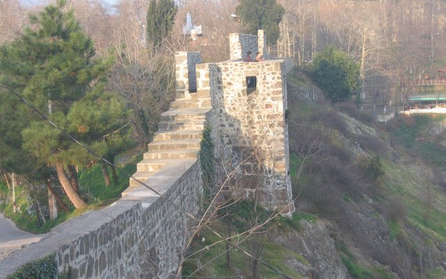
قلعة غيرسونغيرسون · Pontus / بيزنطي قلعة كيرينيا ومتحف حطام السفينةغيرنه (كيرينيا) · بيزنطي / البندقية
قلعة كيرينيا ومتحف حطام السفينةغيرنه (كيرينيا) · بيزنطي / البندقية قلعة غوزنهمرسين · العصور الوسطى
قلعة غوزنهمرسين · العصور الوسطى كنيسة القديس يوحنا في غولشهيرنوشهر · بيزنطي (القرن 13)
كنيسة القديس يوحنا في غولشهيرنوشهر · بيزنطي (القرن 13) دير غوموشلر ومدينته تحت الأرضنيغدة · بيزنطي
دير غوموشلر ومدينته تحت الأرضنيغدة · بيزنطي غوزل يورت ووادي الأديرةآق سراي · بيزنطيموقع هادريانوبوليس الأثريكارابوك · روماني / بيزنطيقلعة خربوطإلازيغ · أورارتي / العصور الوسطىموقع حران الأثريشانلي أورفا · العصر البرونزي – العصور الوسطىهيراكليا عند لاتموسموغلا · هلنستي / بيزنطيموقع ياسوس الأثريموغلا · العصر البرونزي – بيزنطي
غوزل يورت ووادي الأديرةآق سراي · بيزنطيموقع هادريانوبوليس الأثريكارابوك · روماني / بيزنطيقلعة خربوطإلازيغ · أورارتي / العصور الوسطىموقع حران الأثريشانلي أورفا · العصر البرونزي – العصور الوسطىهيراكليا عند لاتموسموغلا · هلنستي / بيزنطيموقع ياسوس الأثريموغلا · العصر البرونزي – بيزنطي وادي إهلاراآق سراي · بيزنطي
وادي إهلاراآق سراي · بيزنطي جسر جستنيان (بش كوبرو)سكاريا · بيزنطيموقع قادي قلعة الأثريآيدن · بيزنطي / العصور الوسطىقلعة يني قلعة في كاهتاأديامان · كوماجيني / العصور الوسطىموقع قانلي ديوانه الأثريمرسين · هلنستي / روماني / بيزنطيقانلي ديوانه (كانيتيليس)مرسين · هلنستي / بيزنطي
جسر جستنيان (بش كوبرو)سكاريا · بيزنطيموقع قادي قلعة الأثريآيدن · بيزنطي / العصور الوسطىقلعة يني قلعة في كاهتاأديامان · كوماجيني / العصور الوسطىموقع قانلي ديوانه الأثريمرسين · هلنستي / روماني / بيزنطيقانلي ديوانه (كانيتيليس)مرسين · هلنستي / بيزنطي قلعة كانتاراإسكله (تريكومو) · بيزنطي / اللوزينيان
قلعة كانتاراإسكله (تريكومو) · بيزنطي / اللوزينيان جامع كاريه (خورا)إسطنبول · بيزنطي / عثمانيموقع كاستابالا الأثريعثمانية · هلنستي / روماني / العصور الوسطى
جامع كاريه (خورا)إسطنبول · بيزنطي / عثمانيموقع كاستابالا الأثريعثمانية · هلنستي / روماني / العصور الوسطى المدرسة القاسميةماردين · Artuklu / Akkoyunlu
المدرسة القاسميةماردين · Artuklu / Akkoyunlu مدينة صولو مغارة تحت الأرض في كسكينقيريق قلعة · بيزنطي / العصور الوسطىكيليستراقونية · روماني / بيزنطيكوريكوس وقيز قلعةمرسين · روماني / العصور الوسطى
مدينة صولو مغارة تحت الأرض في كسكينقيريق قلعة · بيزنطي / العصور الوسطىكيليستراقونية · روماني / بيزنطيكوريكوس وقيز قلعةمرسين · روماني / العصور الوسطى قلعة كوتاهياكوتاهية · بيزنطي / Germiyanكنيسة القديسة حنة (آيفاسيل الصغيرة)طرابزون · بيزنطي (القرن 9)
قلعة كوتاهياكوتاهية · بيزنطي / Germiyanكنيسة القديسة حنة (آيفاسيل الصغيرة)طرابزون · بيزنطي (القرن 9) برج الفتاةإسطنبول · بيزنطي / عثماني
برج الفتاةإسطنبول · بيزنطي / عثماني جامع لالا مصطفى باشاغازي ماغوسا (فاماغوستا) · اللوزينيان / عثماني
جامع لالا مصطفى باشاغازي ماغوسا (فاماغوستا) · اللوزينيان / عثماني جسر ملاباديديار بكر · Artuklu
جسر ملاباديديار بكر · Artuklu قلعة مامورةمرسين · العصور الوسطى / عثمانيمدينة مازي تحت الأرضنوشهر · بيزنطي
قلعة مامورةمرسين · العصور الوسطى / عثمانيمدينة مازي تحت الأرضنوشهر · بيزنطي قلعة الفتاة في مرسين (قيز قلعة)مرسين · بيزنطي / العصور الوسطى
قلعة الفتاة في مرسين (قيز قلعة)مرسين · بيزنطي / العصور الوسطى بيت السيدة مريمإزمير · بيزنطي
بيت السيدة مريمإزمير · بيزنطي دير السيدة مريمغيرسون · بيزنطيالمصيصة (موبسويستيا)أضنة · روماني / بيزنطي
دير السيدة مريمغيرسون · بيزنطيالمصيصة (موبسويستيا)أضنة · روماني / بيزنطي دير مار كبرئيلماردين · المسيحية المبكرةمدينة موجور تحت الأرضقير شهر · بيزنطي / العصور الوسطىموقع أنداوال الأثري (نيغده)نيغدة · روماني / بيزنطي
دير مار كبرئيلماردين · المسيحية المبكرةمدينة موجور تحت الأرضقير شهر · بيزنطي / العصور الوسطىموقع أنداوال الأثري (نيغده)نيغدة · روماني / بيزنطي قلعة عطيلغازي ماغوسا (فاماغوستا) · اللوزينيان / البندقية
قلعة عطيلغازي ماغوسا (فاماغوستا) · اللوزينيان / البندقية موقع قلعة الروم الأثريغازي عنتاب · العصور الوسطىموقع سلاميس الأثريغازي ماغوسا (فاماغوستا) · العصر البرونزي / روماني / بيزنطي
موقع قلعة الروم الأثريغازي عنتاب · العصور الوسطىموقع سلاميس الأثريغازي ماغوسا (فاماغوستا) · العصر البرونزي / روماني / بيزنطي مدينة صاراتلي قرق غوز تحت الأرضآق سراي · بيزنطي
مدينة صاراتلي قرق غوز تحت الأرضآق سراي · بيزنطي جامع السليميةليفكوشا (نيقوسيا) · اللوزينيان / عثماني
جامع السليميةليفكوشا (نيقوسيا) · اللوزينيان / عثماني موقع آيا تكلا الأثري في سيليفكهمرسين · المسيحية المبكرة / بيزنطي
موقع آيا تكلا الأثري في سيليفكهمرسين · المسيحية المبكرة / بيزنطي حفرتا الجنة والجحيم في سيليفكهمرسين · موقع طبيعي / بيزنطي
حفرتا الجنة والجحيم في سيليفكهمرسين · موقع طبيعي / بيزنطي قلعة سيليفكهمرسين · بيزنطي / العصور الوسطى
قلعة سيليفكهمرسين · بيزنطي / العصور الوسطى سيله وكنيسة القديسة هيلانةقونية · بيزنطي / عثمانيموقع سيمينا الأثريأنطاليا · ليكي / بيزنطيمدينة سوبيسوس الأثريةنوشهر · روماني / بيزنطيموقع سوبيسوس الأثرينوشهر · روماني / بيزنطي
سيله وكنيسة القديسة هيلانةقونية · بيزنطي / عثمانيموقع سيمينا الأثريأنطاليا · ليكي / بيزنطيمدينة سوبيسوس الأثريةنوشهر · روماني / بيزنطيموقع سوبيسوس الأثرينوشهر · روماني / بيزنطي دير القديس برناباغازي ماغوسا (فاماغوستا) · المسيحية المبكرة / عثماني
دير القديس برناباغازي ماغوسا (فاماغوستا) · المسيحية المبكرة / عثماني قلعة القديس هيلاريونغيرنه (كيرينيا) · بيزنطي / اللوزينيان
قلعة القديس هيلاريونغيرنه (كيرينيا) · بيزنطي / اللوزينيان دير القديس سمعانهاتاي · بيزنطيموقع ستراتونيكيا الأثريموغلا · هلنستي – عثمانيساحة السلطان أحمد (ميدان سباق الخيل)إسطنبول · روماني / بيزنطي
دير القديس سمعانهاتاي · بيزنطيموقع ستراتونيكيا الأثريموغلا · هلنستي – عثمانيساحة السلطان أحمد (ميدان سباق الخيل)إسطنبول · روماني / بيزنطي دير سوميلاطرابزون · بيزنطي – القرن 20بئر القديس بولس في طرسوسمرسين · روماني / المسيحية المبكرة
دير سوميلاطرابزون · بيزنطي – القرن 20بئر القديس بولس في طرسوسمرسين · روماني / المسيحية المبكرة مدينة تاتلارين تحت الأرضنوشهر · بيزنطي
مدينة تاتلارين تحت الأرضنوشهر · بيزنطي ساحة ثيودوسيوسإسطنبول · بيزنطي
ساحة ثيودوسيوسإسطنبول · بيزنطي أسوار ثيودوسيوسإسطنبول · بيزنطي
أسوار ثيودوسيوسإسطنبول · بيزنطي آيا صوفيا طرابزونطرابزون · بيزنطيقلعة وانوان · أورارتي – عثمانيآيا صوفيا فيزه (جامع غازي سليمان باشا)قرقلر ايلي · بيزنطي
آيا صوفيا طرابزونطرابزون · بيزنطيقلعة وانوان · أورارتي – عثمانيآيا صوفيا فيزه (جامع غازي سليمان باشا)قرقلر ايلي · بيزنطي قلعة يدي قولهإسطنبول · بيزنطي / عثماني
قلعة يدي قولهإسطنبول · بيزنطي / عثماني صهريج البازيليك (يرَبطان)إسطنبول · بيزنطي (القرن 6)
صهريج البازيليك (يرَبطان)إسطنبول · بيزنطي (القرن 6) موقع وادي سوغانلي في يشيل حصارقيصري · بيزنطيتل يوموك تبهمرسين · العصر الحجري الحديث – العصور الوسطىقلعة الحية (يلان قلعة)أضنة · Kilikya Ermeni Krallığı
موقع وادي سوغانلي في يشيل حصارقيصري · بيزنطيتل يوموك تبهمرسين · العصر الحجري الحديث – العصور الوسطىقلعة الحية (يلان قلعة)أضنة · Kilikya Ermeni Krallığı قلعة زيلريزه · العصور الوسطى
قلعة زيلريزه · العصور الوسطى المدرسة الزنجيرية (السنجارية)ديار بكر · Artukluعمود قسطنطين (جمبرلي طاش)إسطنبول · روماني / بيزنطي
المدرسة الزنجيرية (السنجارية)ديار بكر · Artukluعمود قسطنطين (جمبرلي طاش)إسطنبول · روماني / بيزنطي مدينة أوزكوناك تحت الأرضنوشهر · بيزنطي
مدينة أوزكوناك تحت الأرضنوشهر · بيزنطي جامع إمراهور إلياس بك (دير ستوديوس)إسطنبول · بيزنطي
جامع إمراهور إلياس بك (دير ستوديوس)إسطنبول · بيزنطي برج غلطةإسطنبول · جنوي / عثمانيقلعة شانلي أورفاشانلي أورفا · هلنستي – العصور الوسطى
برج غلطةإسطنبول · جنوي / عثمانيقلعة شانلي أورفاشانلي أورفا · هلنستي – العصور الوسطى صهريج شريفية (ثيودوسيوس)إسطنبول · بيزنطيمتحف أكدامار التذكاريوان · العصور الوسطى (القرن 10)
صهريج شريفية (ثيودوسيوس)إسطنبول · بيزنطيمتحف أكدامار التذكاريوان · العصور الوسطى (القرن 10) متحف آيا صوفيا للتاريخ والتجربةإسطنبول · بيزنطي / عثماني
متحف آيا صوفيا للتاريخ والتجربةإسطنبول · بيزنطي / عثماني متحف القديس نيقولاوس التذكاريأنطاليا · بيزنطيقاعة حطام الزجاج في سرجه ليماني ببودرومموغلا · العصور الوسطى (القرن 11)متحف بودروم لآثار ما تحت الماءموغلا · العصر البرونزي – عثماني
متحف القديس نيقولاوس التذكاريأنطاليا · بيزنطيقاعة حطام الزجاج في سرجه ليماني ببودرومموغلا · العصور الوسطى (القرن 11)متحف بودروم لآثار ما تحت الماءموغلا · العصر البرونزي – عثماني متحف فسيفساء القصر الكبيرإسطنبول · بيزنطي
متحف فسيفساء القصر الكبيرإسطنبول · بيزنطي متحف فتحيةإسطنبول · بيزنطيمتحف فسيفساء حلبي باغجهشانلي أورفا · روماني / بيزنطي
متحف فتحيةإسطنبول · بيزنطيمتحف فسيفساء حلبي باغجهشانلي أورفا · روماني / بيزنطي متحف المنحوتات الحجرية (اللابيداري)ليفكوشا (نيقوسيا) · اللوزينيان / البندقية
متحف المنحوتات الحجرية (اللابيداري)ليفكوشا (نيقوسيا) · اللوزينيان / البندقية زنزانة ومتحف نامق كمالغازي ماغوسا (فاماغوستا) · البندقية / عثماني
زنزانة ومتحف نامق كمالغازي ماغوسا (فاماغوستا) · البندقية / عثماني متحف القديس بطرس التذكاريهاتاي · المسيحية المبكرة
متحف القديس بطرس التذكاريهاتاي · المسيحية المبكرة متحف القديس بولس التذكاري في طرسوسمرسين · عثماني / مسيحي
متحف القديس بولس التذكاري في طرسوسمرسين · عثماني / مسيحي متحف الأيقونات في إسكلهإسكله (تريكومو) · بيزنطي (القرن 12)متحف شانلي أورفا الأثريشانلي أورفا · العصر الحجري الحديث – عثماني
متحف الأيقونات في إسكلهإسكله (تريكومو) · بيزنطي (القرن 12)متحف شانلي أورفا الأثريشانلي أورفا · العصر الحجري الحديث – عثمانيالسلاجقة والإمارات
1071 – 1400 · 44 مكانًا
 التكية المولوية في أفيون قره حصارأفيون قره حصار · سلجوقي / عثمانيقلعة أفيون قره حصارأفيون قره حصار · حيثي – عثماني
التكية المولوية في أفيون قره حصارأفيون قره حصار · سلجوقي / عثمانيقلعة أفيون قره حصارأفيون قره حصار · حيثي – عثماني مقبرة أخلاط السلجوقيةبدليس · سلجوقي / الإمارات الأناضولية
مقبرة أخلاط السلجوقيةبدليس · سلجوقي / الإمارات الأناضولية جامع علاء الدينقونية · سلجوقي
جامع علاء الدينقونية · سلجوقي قلعة ألانياأنطاليا · سلجوقيقلعة أنقرةأنقرة · روماني – عثماني
قلعة ألانياأنطاليا · سلجوقيقلعة أنقرةأنقرة · روماني – عثماني مجمع أصحاب الكهفقهرمان مرعش · سلجوقي / عثمانيقلعة أياسولوكإزمير · بيزنطي / الإمارات الأناضولية
مجمع أصحاب الكهفقهرمان مرعش · سلجوقي / عثمانيقلعة أياسولوكإزمير · بيزنطي / الإمارات الأناضولية خان أغزي قرهآق سراي · سلجوقي
خان أغزي قرهآق سراي · سلجوقي مدرسة جاجا بكقير شهر · سلجوقي
مدرسة جاجا بكقير شهر · سلجوقي الجامع الكبير ودار الشفاء في ديفريغيسيواس · سلجوقي (القرن 13)أسوار ديار بكرديار بكر · روماني – عثماني
الجامع الكبير ودار الشفاء في ديفريغيسيواس · سلجوقي (القرن 13)أسوار ديار بكرديار بكر · روماني – عثماني الجامع الكبير في ديار بكرديار بكر · سلجوقيقلعة أرضرومأرضروم · بيزنطي / سلجوقي / عثمانيقلعة إيغيل ومقامات الأنبياءديار بكر · Asur – عثمانيموقع تلوس الأثري (فتحية)موغلا · العصر البرونزي – عثمانيقلعة غازي عنتابغازي عنتاب · بيزنطي / مملوكي / عثماني
الجامع الكبير في ديار بكرديار بكر · سلجوقيقلعة أرضرومأرضروم · بيزنطي / سلجوقي / عثمانيقلعة إيغيل ومقامات الأنبياءديار بكر · Asur – عثمانيموقع تلوس الأثري (فتحية)موغلا · العصر البرونزي – عثمانيقلعة غازي عنتابغازي عنتاب · بيزنطي / مملوكي / عثماني خان البعرورشانلي أورفا · سلجوقي
خان البعرورشانلي أورفا · سلجوقي قلعة قارصقارص · سلجوقي / عثمانيقلعة قيصريقيصري · روماني / سلجوقي
قلعة قارصقارص · سلجوقي / عثمانيقلعة قيصريقيصري · روماني / سلجوقي قصر قباد آبادقونية · سلجوقيجسر كوبرو بازار (أسبندوس)أنطاليا · روماني / سلجوقي
قصر قباد آبادقونية · سلجوقيجسر كوبرو بازار (أسبندوس)أنطاليا · روماني / سلجوقي البرج الأحمر (قيزيل قوله)أنطاليا · سلجوقي
البرج الأحمر (قيزيل قوله)أنطاليا · سلجوقي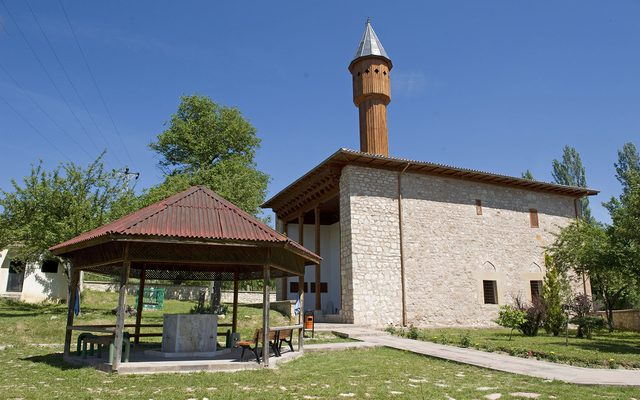
جامع محمود بكقسطموني · الإمارات الأناضولية قلعة وموقع بيتشين الأثري في ميلاسموغلا · العصور القديمة / إمارة منتشاناكوليا ومجمع سيد غازيإسكي شهر · سلجوقي / عثماني
قلعة وموقع بيتشين الأثري في ميلاسموغلا · العصور القديمة / إمارة منتشاناكوليا ومجمع سيد غازيإسكي شهر · سلجوقي / عثماني مدرسة الصاحبيةقيصري · سلجوقيموقع ستراتونيكيا الأثريموغلا · هلنستي – عثماني
مدرسة الصاحبيةقيصري · سلجوقيموقع ستراتونيكيا الأثريموغلا · هلنستي – عثماني خان السلطان (سلطان خاني)آق سراي · سلجوقيدير سوميلاطرابزون · بيزنطي – القرن 20قلعة وانوان · أورارتي – عثماني
خان السلطان (سلطان خاني)آق سراي · سلجوقيدير سوميلاطرابزون · بيزنطي – القرن 20قلعة وانوان · أورارتي – عثماني المئذنة المضلعة (يفلي منارة)أنطاليا · سلجوقي
المئذنة المضلعة (يفلي منارة)أنطاليا · سلجوقي خان زازادينقونية · سلجوقي
خان زازادينقونية · سلجوقي القباب الثلاثأرضروم · Saltukluمتحف بودروم لآثار ما تحت الماءموغلا · العصر البرونزي – عثماني
القباب الثلاثأرضروم · Saltukluمتحف بودروم لآثار ما تحت الماءموغلا · العصر البرونزي – عثماني المتحف الإثنوغرافيأنقرة · سلجوقي / عثماني / العهد الجمهوري
المتحف الإثنوغرافيأنقرة · سلجوقي / عثماني / العهد الجمهوري متحف حاجي بكتاشنوشهر · سلجوقي / عثماني
متحف حاجي بكتاشنوشهر · سلجوقي / عثماني متحف قراطاي (متحف البلاط)قونية · سلجوقي
متحف قراطاي (متحف البلاط)قونية · سلجوقي متحف بانوراما قونيةقونية · سلجوقيمتحف ملازكردموش · سلجوقي (1071)
متحف بانوراما قونيةقونية · سلجوقيمتحف ملازكردموش · سلجوقي (1071) متحف مولاناقونية · سلجوقي / عثمانيمتحف التكية المولويةأنطاليا · سلجوقي / عثماني
متحف مولاناقونية · سلجوقي / عثمانيمتحف التكية المولويةأنطاليا · سلجوقي / عثماني متحف الآثار التركية والإسلاميةإسطنبول · سلجوقي / عثمانيمتحف شانلي أورفا الأثريشانلي أورفا · العصر الحجري الحديث – عثماني
متحف الآثار التركية والإسلاميةإسطنبول · سلجوقي / عثمانيمتحف شانلي أورفا الأثريشانلي أورفا · العصر الحجري الحديث – عثمانيالعصر العثماني
1299 – 1922 · 163 مكانًا
موقع زلفه وباشا باغلارينوشهر · بيزنطي / عثمانيالتكية المولوية في أفيون قره حصارأفيون قره حصار · سلجوقي / عثمانيقلعة أفيون قره حصارأفيون قره حصار · حيثي – عثماني كنيس أهريداإسطنبول · عثماني (القرن 15)ضريح آق شمس الدينبولو · عثماني
كنيس أهريداإسطنبول · عثماني (القرن 15)ضريح آق شمس الدينبولو · عثماني قلعة الأناضول (أناضولو حصاري)إسطنبول · عثمانيقلعة أنقرةأنقرة · روماني – عثمانيدير الرسول أندراوسإسكله (تريكومو) · بيزنطي / عثمانيمجمع أصحاب الكهفقهرمان مرعش · سلجوقي / عثمانيجامع آيا صوفيا الكبيرإسطنبول · بيزنطي / عثماني
قلعة الأناضول (أناضولو حصاري)إسطنبول · عثمانيقلعة أنقرةأنقرة · روماني – عثمانيدير الرسول أندراوسإسكله (تريكومو) · بيزنطي / عثمانيمجمع أصحاب الكهفقهرمان مرعش · سلجوقي / عثمانيجامع آيا صوفيا الكبيرإسطنبول · بيزنطي / عثماني قصر آينالي قاواكإسطنبول · عثماني (القرن 18)بركة إبراهيم (بالِقلي غول)شانلي أورفا · العصور الوسطى / عثماني
قصر آينالي قاواكإسطنبول · عثماني (القرن 18)بركة إبراهيم (بالِقلي غول)شانلي أورفا · العصور الوسطى / عثماني قصر بيلربييإسطنبول · عثماني (القرن 19)قلعة بدليسبدليس · العصور الوسطى / عثماني
قصر بيلربييإسطنبول · عثماني (القرن 19)قلعة بدليسبدليس · العصور الوسطى / عثماني كنيسة القديس استفانوس البلغارية (الكنيسة الحديدية)إسطنبول · عثماني (القرن 19)
كنيسة القديس استفانوس البلغارية (الكنيسة الحديدية)إسطنبول · عثماني (القرن 19) الجامع الكبير في بورصةبورصة · عثماني (القرن 14)
الجامع الكبير في بورصةبورصة · عثماني (القرن 14) الجامع الأخضر والضريح الأخضر في بورصةبورصة · عثماني (القرن 15)
الجامع الأخضر والضريح الأخضر في بورصةبورصة · عثماني (القرن 15) مدرسة بيوك آغاأماسيا · عثماني
مدرسة بيوك آغاأماسيا · عثماني الخان الكبيرليفكوشا (نيقوسيا) · عثماني (القرن 16)
الخان الكبيرليفكوشا (نيقوسيا) · عثماني (القرن 16) خان جنجيكارابوك · عثماني
خان جنجيكارابوك · عثماني قرية جومالي قيزيكبورصة · عثمانيأسوار ديار بكرديار بكر · روماني – عثماني
قرية جومالي قيزيكبورصة · عثمانيأسوار ديار بكرديار بكر · روماني – عثماني قصر دولمه بهتشهإسطنبول · عثماني (القرن 19)
قصر دولمه بهتشهإسطنبول · عثماني (القرن 19) كنيس أدرنة الكبيرأدرنة · عثماني (القرن 20)البرج المقدوني في أدرنةأدرنة · روماني / بيزنطي / عثماني
كنيس أدرنة الكبيرأدرنة · عثماني (القرن 20)البرج المقدوني في أدرنةأدرنة · روماني / بيزنطي / عثماني قصر أدرنة (السراي الجديد)أدرنة · عثماني
قصر أدرنة (السراي الجديد)أدرنة · عثماني جامع السليمية في أدرنةأدرنة · عثماني (القرن 16)
جامع السليمية في أدرنةأدرنة · عثماني (القرن 16) جامع أمير سلطانبورصة · عثمانيقلعة إينز (آينوس)أدرنة · العصور القديمة / بيزنطي / عثمانيقلعة أرضرومأرضروم · بيزنطي / سلجوقي / عثماني
جامع أمير سلطانبورصة · عثمانيقلعة إينز (آينوس)أدرنة · العصور القديمة / بيزنطي / عثمانيقلعة أرضرومأرضروم · بيزنطي / سلجوقي / عثماني جامع أبي أيوب الأنصاريإسطنبول · عثمانيقلعة إيغيل ومقامات الأنبياءديار بكر · Asur – عثمانيالبطريركية المسكونية وكنيسة القديس جاورجيوسإسطنبول · عثماني (القرن 18)
جامع أبي أيوب الأنصاريإسطنبول · عثمانيقلعة إيغيل ومقامات الأنبياءديار بكر · Asur – عثمانيالبطريركية المسكونية وكنيسة القديس جاورجيوسإسطنبول · عثماني (القرن 18) موقع قايا كوي في فتحيةموغلا · القرن 19–20موقع تلوس الأثري (فتحية)موغلا · العصر البرونزي – عثمانيقلعة غازي عنتابغازي عنتاب · بيزنطي / مملوكي / عثماني
موقع قايا كوي في فتحيةموغلا · القرن 19–20موقع تلوس الأثري (فتحية)موغلا · العصر البرونزي – عثمانيقلعة غازي عنتابغازي عنتاب · بيزنطي / مملوكي / عثماني موقع غاليبولي التاريخيجناق قلعة · عثماني / الحرب العالمية الأولى
موقع غاليبولي التاريخيجناق قلعة · عثماني / الحرب العالمية الأولى جامع حبيب النجارهاتاي · عثماني
جامع حبيب النجارهاتاي · عثماني جامع حاجي بيرم وليأنقرة · عثماني
جامع حاجي بيرم وليأنقرة · عثماني قلعة حرشنةأماسيا · Pontus / عثماني
قلعة حرشنةأماسيا · Pontus / عثماني خان حسن باشاديار بكر · عثماني
خان حسن باشاديار بكر · عثماني كنيسة الرسل (جامع كومبت)قارص · Bagratlı / عثماني
كنيسة الرسل (جامع كومبت)قارص · Bagratlı / عثماني قلعة خوشابوان · عثماني (القرن 17)
قلعة خوشابوان · عثماني (القرن 17) قصر الزيزفون (إيهلامور)إسطنبول · عثماني (القرن 19)
قصر الزيزفون (إيهلامور)إسطنبول · عثماني (القرن 19) جسر إرغانديبورصة · عثمانيقلعة قديفة (جبل باغوس)إزمير · هلنستي / عثمانيجامع كاريه (خورا)إسطنبول · بيزنطي / عثمانيقلعة قارصقارص · سلجوقي / عثمانيكمالية (إغين)أرزنجان · عثماني
جسر إرغانديبورصة · عثمانيقلعة قديفة (جبل باغوس)إزمير · هلنستي / عثمانيجامع كاريه (خورا)إسطنبول · بيزنطي / عثمانيقلعة قارصقارص · سلجوقي / عثمانيكمالية (إغين)أرزنجان · عثماني قلعة كيليد البحرجناق قلعة · عثماني
قلعة كيليد البحرجناق قلعة · عثماني خان الشرنقة (قوزا خان)بورصة · عثماني
خان الشرنقة (قوزا خان)بورصة · عثماني قصر كوتشوك صوإسطنبول · عثماني (القرن 19)برج الفتاةإسطنبول · بيزنطي / عثمانيجامع لالا مصطفى باشاغازي ماغوسا (فاماغوستا) · اللوزينيان / عثماني
قصر كوتشوك صوإسطنبول · عثماني (القرن 19)برج الفتاةإسطنبول · بيزنطي / عثمانيجامع لالا مصطفى باشاغازي ماغوسا (فاماغوستا) · اللوزينيان / عثماني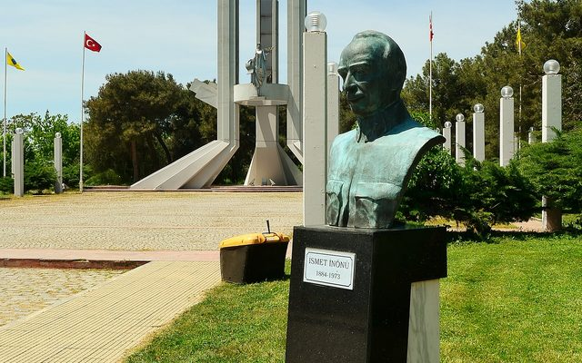
نصب لوزان ومحطة قره آغاجأدرنة · عثماني / العهد الجمهوريقلعة مامورةمرسين · العصور الوسطى / عثماني أكشاك مسلكإسطنبول · عثماني (القرن 19)
أكشاك مسلكإسطنبول · عثماني (القرن 19) جسر مريتش (جسر المجيدية)أدرنة · عثماني (القرن 19)
جسر مريتش (جسر المجيدية)أدرنة · عثماني (القرن 19) جامع مهرماه سلطان (أدرنة قابي)إسطنبول · عثماني (القرن 16)
جامع مهرماه سلطان (أدرنة قابي)إسطنبول · عثماني (القرن 16) مجمع المراديةبورصة · عثماني
مجمع المراديةبورصة · عثماني مصطفى باشا (سيناسوس)نوشهر · عثمانيناكوليا ومجمع سيد غازيإسكي شهر · سلجوقي / عثماني
مصطفى باشا (سيناسوس)نوشهر · عثمانيناكوليا ومجمع سيد غازيإسكي شهر · سلجوقي / عثماني ثكنة رامي (مكتبة رامي)إسطنبول · عثماني (القرن 18)
ثكنة رامي (مكتبة رامي)إسطنبول · عثماني (القرن 18) قلعة روملي حصارإسطنبول · عثماني
قلعة روملي حصارإسطنبول · عثماني جامع رستم باشاإسطنبول · عثماني (القرن 16)جامع السليميةليفكوشا (نيقوسيا) · اللوزينيان / عثمانيسيله وكنيسة القديسة هيلانةقونية · بيزنطي / عثماني
جامع رستم باشاإسطنبول · عثماني (القرن 16)جامع السليميةليفكوشا (نيقوسيا) · اللوزينيان / عثمانيسيله وكنيسة القديسة هيلانةقونية · بيزنطي / عثماني كنيسة القديس أنطونيوس البادويإسطنبول · عثماني (القرن 20)دير القديس برناباغازي ماغوسا (فاماغوستا) · المسيحية المبكرة / عثمانيموقع ستراتونيكيا الأثريموغلا · هلنستي – عثماني
كنيسة القديس أنطونيوس البادويإسطنبول · عثماني (القرن 20)دير القديس برناباغازي ماغوسا (فاماغوستا) · المسيحية المبكرة / عثمانيموقع ستراتونيكيا الأثريموغلا · هلنستي – عثماني جامع السلطان أحمد (الجامع الأزرق)إسطنبول · عثماني (القرن 17)
جامع السلطان أحمد (الجامع الأزرق)إسطنبول · عثماني (القرن 17) كنيسة سورب كيراكوس الأرمنيةديار بكر · عثماني (القرن 19)
كنيسة سورب كيراكوس الأرمنيةديار بكر · عثماني (القرن 19) جامع السليمانيةإسطنبول · عثماني (القرن 16)دير سوميلاطرابزون · بيزنطي – القرن 20
جامع السليمانيةإسطنبول · عثماني (القرن 16)دير سوميلاطرابزون · بيزنطي – القرن 20 سجن سينوب التاريخيسينوب · عثماني / العهد الجمهوريخان طاش في توقات (خان الفويفودا)توقات · عثماني
سجن سينوب التاريخيسينوب · عثماني / العهد الجمهوريخان طاش في توقات (خان الفويفودا)توقات · عثماني قصر طوب قابيإسطنبول · عثماني (القرن 15–19)قلعة وانوان · أورارتي – عثمانيقلعة يدي قولهإسطنبول · بيزنطي / عثماني
قصر طوب قابيإسطنبول · عثماني (القرن 15–19)قلعة وانوان · أورارتي – عثمانيقلعة يدي قولهإسطنبول · بيزنطي / عثماني قرية يوروككارابوك · عثماني
قرية يوروككارابوك · عثماني قصر يلدزإسطنبول · عثماني (القرن 19)
قصر يلدزإسطنبول · عثماني (القرن 19) قصر إسحاق باشاآغري · عثمانيبرج غلطةإسطنبول · جنوي / عثماني
قصر إسحاق باشاآغري · عثمانيبرج غلطةإسطنبول · جنوي / عثماني جامع شهزادهإسطنبول · عثماني (القرن 16)
جامع شهزادهإسطنبول · عثماني (القرن 16) قرية شيرينجهإزمير · عثماني
قرية شيرينجهإزمير · عثماني متحف الجزرإسطنبول · عثماني / العهد الجمهوري
متحف الجزرإسطنبول · عثماني / العهد الجمهوري متحف آدم ميتسكيفيتشإسطنبول · عثماني
متحف آدم ميتسكيفيتشإسطنبول · عثماني متحف أنطاليا الإثنوغرافيأنطاليا · عثماني / العصر الحديث
متحف أنطاليا الإثنوغرافيأنطاليا · عثماني / العصر الحديث المتحف العسكريإسطنبول · عثماني / العهد الجمهوري
المتحف العسكريإسطنبول · عثماني / العهد الجمهوري متحف أتاتورك والرديف والإثنوغرافياقوجه ايلي · عثماني / العهد الجمهوري
متحف أتاتورك والرديف والإثنوغرافياقوجه ايلي · عثماني / العهد الجمهوري متحف قصر كشك الصيدقوجه ايلي · عثمانيمتحف آيا صوفيا للتاريخ والتجربةإسطنبول · بيزنطي / عثماني
متحف قصر كشك الصيدقوجه ايلي · عثمانيمتحف آيا صوفيا للتاريخ والتجربةإسطنبول · بيزنطي / عثماني متحف ثقافة الحمّام في بايزيدإسطنبول · عثماني
متحف ثقافة الحمّام في بايزيدإسطنبول · عثماني متحف الزجاج والبلور في بيكوزإسطنبول · عثماني
متحف الزجاج والبلور في بيكوزإسطنبول · عثماني متحف بيبازاري الحيأنقرة · عثمانيمتحف بيش قوناقلار الإثنوغرافي والبيت الملطي التقليديملطية · عثماني / العصر الحديث
متحف بيبازاري الحيأنقرة · عثمانيمتحف بيش قوناقلار الإثنوغرافي والبيت الملطي التقليديملطية · عثماني / العصر الحديث قصر تشاكير آغا في بيرغيإزمير · عثمانيمتحف بدليس الإثنوغرافيبدليس · عثماني / العصر الحديثمتحف بودروم لآثار ما تحت الماءموغلا · العصر البرونزي – عثماني
قصر تشاكير آغا في بيرغيإزمير · عثمانيمتحف بدليس الإثنوغرافيبدليس · عثماني / العصر الحديثمتحف بودروم لآثار ما تحت الماءموغلا · العصر البرونزي – عثماني متحف الآثار التركية والإسلامية في بورصةبورصة · عثماني
متحف الآثار التركية والإسلامية في بورصةبورصة · عثماني متحف بيت جاهد صدقي ترانجي الإثنوغرافيديار بكر · عثماني
متحف بيت جاهد صدقي ترانجي الإثنوغرافيديار بكر · عثماني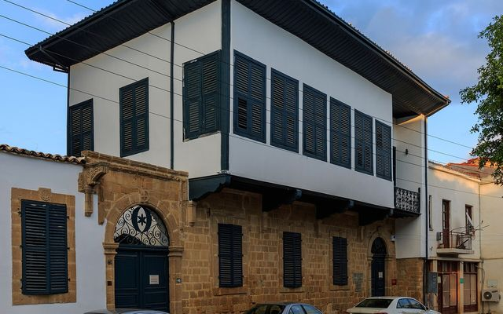
قصر درويش باشاليفكوشا (نيقوسيا) · عثماني (القرن 19)متحف تاريخ البلقان في تحصين خضرلكأدرنة · عثمانيمتحف أمينة غوغوش للمطبخغازي عنتاب · عثماني / العصر الحاضرالمتحف الإثنوغرافيأنقرة · سلجوقي / عثماني / العهد الجمهوري متحف التكية المولوية في غلطةإسطنبول · عثماني
متحف التكية المولوية في غلطةإسطنبول · عثماني متحف الحرب في غيليبولوجناق قلعة · الحرب العالمية الأولى
متحف الحرب في غيليبولوجناق قلعة · الحرب العالمية الأولى متحف الأيقونات في كيرينياغيرنه (كيرينيا) · عثماني (القرن 19)
متحف الأيقونات في كيرينياغيرنه (كيرينيا) · عثماني (القرن 19) متحف قصر غوبغوب أوغلو الإثنوغرافيقيصري · عثمانيمتحف حاجي بكتاشنوشهر · سلجوقي / عثمانيتحصين الحميدية ومتحف تاريخ معارك جناق قلعةجناق قلعة · عثماني / الحرب العالمية الأولىمتحف حسن سوزر الإثنوغرافيغازي عنتاب · عثماني
متحف قصر غوبغوب أوغلو الإثنوغرافيقيصري · عثمانيمتحف حاجي بكتاشنوشهر · سلجوقي / عثمانيتحصين الحميدية ومتحف تاريخ معارك جناق قلعةجناق قلعة · عثماني / الحرب العالمية الأولىمتحف حسن سوزر الإثنوغرافيغازي عنتاب · عثماني قصر هازيرانلارأماسيا · عثماني
قصر هازيرانلارأماسيا · عثماني مركز كاباتبه التعريفيجناق قلعة · الحرب العالمية الأولىمتحف صفرانبولوكارابوك · عثماني
مركز كاباتبه التعريفيجناق قلعة · الحرب العالمية الأولىمتحف صفرانبولوكارابوك · عثماني متحف تاريخ حرب جبهة القوقاز في قارصقارص · عثماني / الحرب العالمية الأولى
متحف تاريخ حرب جبهة القوقاز في قارصقارص · عثماني / الحرب العالمية الأولى متحف قلعة كليت بحرجناق قلعة · عثمانيمتحف قونية الإثنوغرافيقونية · عثماني / العصر الحديث
متحف قلعة كليت بحرجناق قلعة · عثمانيمتحف قونية الإثنوغرافيقونية · عثماني / العصر الحديث متحف بيت كوشوتكوتاهية · عثماني
متحف بيت كوشوتكوتاهية · عثماني متحف كوروكوبرو التذكاري وبيت أضنة التقليديأضنة · عثماني / العهد الجمهوريقصر لطيف أوغلوتوقات · عثماني (القرن 19)متحف قصر لواء باشا الإثنوغرافيقسطموني · عثماني
متحف كوروكوبرو التذكاري وبيت أضنة التقليديأضنة · عثماني / العهد الجمهوريقصر لطيف أوغلوتوقات · عثماني (القرن 19)متحف قصر لواء باشا الإثنوغرافيقسطموني · عثماني متحف حجر الميرشوم (لوله طاش)إسكي شهر · عثماني / العصر الحاضرمتحف التعدينزونغولداق · القرن 19–20متحف مرمريسموغلا · عثمانيمتحف مولاناقونية · سلجوقي / عثماني
متحف حجر الميرشوم (لوله طاش)إسكي شهر · عثماني / العصر الحاضرمتحف التعدينزونغولداق · القرن 19–20متحف مرمريسموغلا · عثمانيمتحف مولاناقونية · سلجوقي / عثماني متحف التكية المولويةليفكوشا (نيقوسيا) · عثماني (القرن 17)متحف التكية المولويةأنطاليا · سلجوقي / عثماني
متحف التكية المولويةليفكوشا (نيقوسيا) · عثماني (القرن 17)متحف التكية المولويةأنطاليا · سلجوقي / عثماني متحف المعمار سنان والمدينةقيصري · عثماني
متحف المعمار سنان والمدينةقيصري · عثماني متحف غازهانةإسطنبول · عثماني / العصر الحاضر
متحف غازهانةإسطنبول · عثماني / العصر الحاضر متحف تحصين نماز كاهجناق قلعة · عثماني / الحرب العالمية الأولىمتحف منزل نامق كمالتكيرداغ · عثمانيزنزانة ومتحف نامق كمالغازي ماغوسا (فاماغوستا) · البندقية / عثماني
متحف تحصين نماز كاهجناق قلعة · عثماني / الحرب العالمية الأولىمتحف منزل نامق كمالتكيرداغ · عثمانيزنزانة ومتحف نامق كمالغازي ماغوسا (فاماغوستا) · البندقية / عثماني متحف بيت نجمي إيغه الإثنوغرافيأدرنة · عثمانيعمارة نيلوفر خاتون (متحف الآثار التركية والإسلامية)بورصة · عثماني
متحف بيت نجمي إيغه الإثنوغرافيأدرنة · عثمانيعمارة نيلوفر خاتون (متحف الآثار التركية والإسلامية)بورصة · عثماني متحف عثمان حمدي بكقوجه ايلي · عثمانيمتحف البيت العثمانيبورصة · عثماني
متحف عثمان حمدي بكقوجه ايلي · عثمانيمتحف البيت العثمانيبورصة · عثماني متحف بانوراما 1453إسطنبول · عثماني
متحف بانوراما 1453إسطنبول · عثماني متحف مدينة ماردين صاقب صابانجيماردين · عثماني / العهد الجمهوري
متحف مدينة ماردين صاقب صابانجيماردين · عثماني / العهد الجمهوري متحف صاقب صبانجيإسطنبول · عثماني / معاصر
متحف صاقب صبانجيإسطنبول · عثماني / معاصر سالت غلطةإسطنبول · عثماني / العصر الحاضرمتحف أرسلان تورونلار الإثنوغرافي في سينوبسينوب · عثماني
سالت غلطةإسطنبول · عثماني / العصر الحاضرمتحف أرسلان تورونلار الإثنوغرافي في سينوبسينوب · عثماني متحف الصحة في مجمع السلطان بايزيد الثانيأدرنة · عثماني
متحف الصحة في مجمع السلطان بايزيد الثانيأدرنة · عثماني متحف أرطغرل غازي في سوغوتبيله جك · عثمانيمتحف تاكسيارخيس التذكاريباليكسير · عثمانيمتحف القديس بولس التذكاري في طرسوسمرسين · عثماني / مسيحي
متحف أرطغرل غازي في سوغوتبيله جك · عثمانيمتحف تاكسيارخيس التذكاريباليكسير · عثمانيمتحف القديس بولس التذكاري في طرسوسمرسين · عثماني / مسيحي متحف توفاش للعربات الأناضوليةبورصة · عثماني / العهد الجمهوريبيت أتاتورك والمتحف الإثنوغرافي في توقاتتوقات · عثماني / العهد الجمهوري
متحف توفاش للعربات الأناضوليةبورصة · عثماني / العهد الجمهوريبيت أتاتورك والمتحف الإثنوغرافي في توقاتتوقات · عثماني / العهد الجمهوري متحف فنون الخط للأوقاف التركيةإسطنبول · عثمانيمتحف الآثار التركية والإسلاميةإسطنبول · سلجوقي / عثمانيمتحف الآثار التركية والإسلامية في أدرنةأدرنة · عثماني
متحف فنون الخط للأوقاف التركيةإسطنبول · عثمانيمتحف الآثار التركية والإسلاميةإسطنبول · سلجوقي / عثمانيمتحف الآثار التركية والإسلامية في أدرنةأدرنة · عثماني متحف الآثار التركية الإسلامية والإثنوغرافياأرضروم · إيلخاني / عثماني
متحف الآثار التركية الإسلامية والإثنوغرافياأرضروم · إيلخاني / عثماني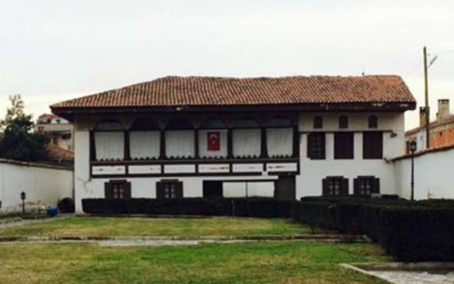
متحف بيت شماكي في يني شهربورصة · عثماني متحف ضياء كوك ألبديار بكر · عثماني
متحف ضياء كوك ألبديار بكر · عثماني متحف تشاملك للقاطرات البخاريةإزمير · عثماني / العهد الجمهوري
متحف تشاملك للقاطرات البخاريةإزمير · عثماني / العهد الجمهوري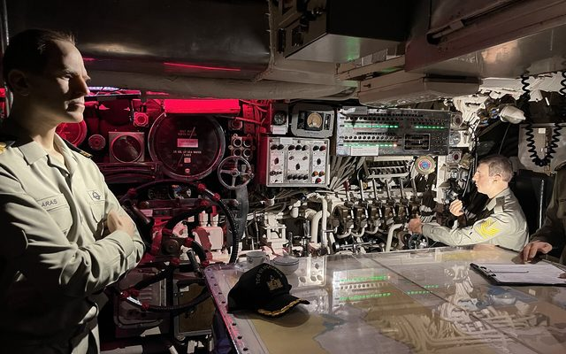
متحف تشاناكالي البحريجناق قلعة · الحرب العالمية الأولىمركز التعريف بملحمة جناق قلعةجناق قلعة · الحرب العالمية الأولىساحة إعادة تمثيل الهلال الأحمر في جناق قلعةجناق قلعة · الحرب العالمية الأولى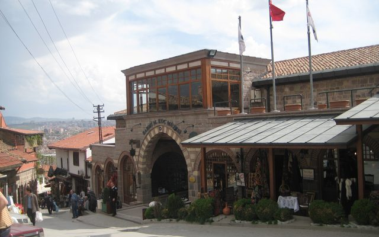
متحف تشنغل خان رحمي كوتشأنقرة · عثماني / العهد الجمهوري متحف تشيشمهإزمير · عثماني
متحف تشيشمهإزمير · عثماني متحف البلاط في كوتاهيةكوتاهية · بنو كرميان / عثماني
متحف البلاط في كوتاهيةكوتاهية · بنو كرميان / عثماني متحف إسطنبول البحريإسطنبول · عثماني / العهد الجمهوريمتحف شانلي أورفا الأثريشانلي أورفا · العصر الحجري الحديث – عثماني
متحف إسطنبول البحريإسطنبول · عثماني / العهد الجمهوريمتحف شانلي أورفا الأثريشانلي أورفا · العصر الحجري الحديث – عثمانيالاستقلال والجمهورية
1919 – اليوم · 116 مكانًا
 مقبرة الدولةأنقرة · العهد الجمهوريكنيس أدرنة الكبيرأدرنة · عثماني (القرن 20)موقع قايا كوي في فتحيةموغلا · القرن 19–20نصب لوزان ومحطة قره آغاجأدرنة · عثماني / العهد الجمهوريكنيسة القديس أنطونيوس البادويإسطنبول · عثماني (القرن 20)دير سوميلاطرابزون · بيزنطي – القرن 20سجن سينوب التاريخيسينوب · عثماني / العهد الجمهوري
مقبرة الدولةأنقرة · العهد الجمهوريكنيس أدرنة الكبيرأدرنة · عثماني (القرن 20)موقع قايا كوي في فتحيةموغلا · القرن 19–20نصب لوزان ومحطة قره آغاجأدرنة · عثماني / العهد الجمهوريكنيسة القديس أنطونيوس البادويإسطنبول · عثماني (القرن 20)دير سوميلاطرابزون · بيزنطي – القرن 20سجن سينوب التاريخيسينوب · عثماني / العهد الجمهوري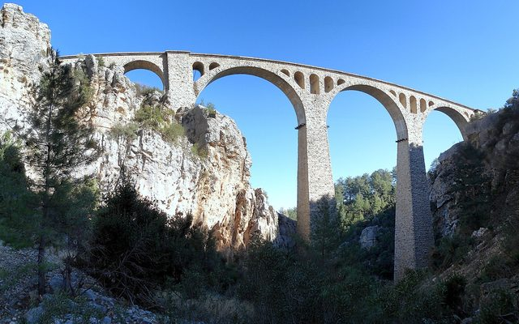
جسر فارداأضنة · Cumhuriyet öncesi (1912) متحف 15 يوليو للديمقراطيةأنقرة · العصر الحاضرمتحف الجزرإسطنبول · عثماني / العهد الجمهوري
متحف 15 يوليو للديمقراطيةأنقرة · العصر الحاضرمتحف الجزرإسطنبول · عثماني / العهد الجمهوري متحف بيت أتاتورك في أضنةأضنة · العهد الجمهوريمتحف زيت الزيتون في أداتبهجناق قلعة · العصر الحاضر
متحف بيت أتاتورك في أضنةأضنة · العهد الجمهوريمتحف زيت الزيتون في أداتبهجناق قلعة · العصر الحاضر أرشيف ومتحف مدينة أحمد بيريشتيناإزمير · العهد الجمهوريمتحف بيت علاء الدين ياواشجاكلس · العهد الجمهوريمتحف بيت أتاتورك في ألانياأنطاليا · العهد الجمهوريمتحف التبادل السكاني في ألاتشامسامسون · العهد الجمهوري
أرشيف ومتحف مدينة أحمد بيريشتيناإزمير · العهد الجمهوريمتحف بيت علاء الدين ياواشجاكلس · العهد الجمهوريمتحف بيت أتاتورك في ألانياأنطاليا · العهد الجمهوريمتحف التبادل السكاني في ألاتشامسامسون · العهد الجمهوري متحف بيت أتاتورك في أنطالياأنطاليا · العهد الجمهوريمتحف أنطاليا الإثنوغرافيأنطاليا · عثماني / العصر الحديث
متحف بيت أتاتورك في أنطالياأنطاليا · العهد الجمهوريمتحف أنطاليا الإثنوغرافيأنطاليا · عثماني / العصر الحديث متحف أنطاليا للألعابأنطاليا · العصر الحاضر
متحف أنطاليا للألعابأنطاليا · العصر الحاضر أنيت كبيرأنقرة · العهد الجمهوري
أنيت كبيرأنقرة · العهد الجمهوري متحف آرا غولرإسطنبول · العهد الجمهوري
متحف آرا غولرإسطنبول · العهد الجمهوري مركز أركاس للفنونإزمير · العصر الحاضر
مركز أركاس للفنونإزمير · العصر الحاضر آرترإسطنبول · العصر الحاضرالمتحف العسكريإسطنبول · عثماني / العهد الجمهوريمتحف بيت أتاتورك في ديار بكرديار بكر · العهد الجمهوري
آرترإسطنبول · العصر الحاضرالمتحف العسكريإسطنبول · عثماني / العهد الجمهوريمتحف بيت أتاتورك في ديار بكرديار بكر · العهد الجمهوري مسكن أتاتورك ومتحف السكك الحديديةأنقرة · العهد الجمهوري
مسكن أتاتورك ومتحف السكك الحديديةأنقرة · العهد الجمهوري متحف أتاتورك (شيشلي)إسطنبول · العهد الجمهوريمتحف أتاتورك والإثنوغرافيا في أوشاكعشاق · العهد الجمهوريمتحف أتاتورك والرديف والإثنوغرافياقوجه ايلي · عثماني / العهد الجمهوري
متحف أتاتورك (شيشلي)إسطنبول · العهد الجمهوريمتحف أتاتورك والإثنوغرافيا في أوشاكعشاق · العهد الجمهوريمتحف أتاتورك والرديف والإثنوغرافياقوجه ايلي · عثماني / العهد الجمهوري متحف أطلس 1948 للسينما في إسطنبولإسطنبول · العهد الجمهوري / معاصر
متحف أطلس 1948 للسينما في إسطنبولإسطنبول · العهد الجمهوري / معاصر متحف عاشق ويسلسيواس · العهد الجمهوري
متحف عاشق ويسلسيواس · العهد الجمهوري متحف سفينة باندرماسامسون · العهد الجمهوري
متحف سفينة باندرماسامسون · العهد الجمهوري متحف مقر الجبهة الغربيةقونية · العهد الجمهوري
متحف مقر الجبهة الغربيةقونية · العهد الجمهوري متحف باكسي في بايبورتبايبورت · معاصرمتحف بيش قوناقلار الإثنوغرافي والبيت الملطي التقليديملطية · عثماني / العصر الحديثمتحف بدليس الإثنوغرافيبدليس · عثماني / العصر الحديثمتحف الجبن في بوغاتبهقارص · العصر الحاضر
متحف باكسي في بايبورتبايبورت · معاصرمتحف بيش قوناقلار الإثنوغرافي والبيت الملطي التقليديملطية · عثماني / العصر الحديثمتحف بدليس الإثنوغرافيبدليس · عثماني / العصر الحديثمتحف الجبن في بوغاتبهقارص · العصر الحاضر متحف بيت أتاتورك في بورصةبورصة · العهد الجمهوري
متحف بيت أتاتورك في بورصةبورصة · العهد الجمهوري جيرموديرنأنقرة · العصر الحاضر
جيرموديرنأنقرة · العصر الحاضر متحف الجمهوريةأنقرة · العهد الجمهوري
متحف الجمهوريةأنقرة · العهد الجمهوري متحف أتاتورك والإثنوغرافيا في دنيزليدنيزلي · العهد الجمهوري
متحف أتاتورك والإثنوغرافيا في دنيزليدنيزلي · العهد الجمهوري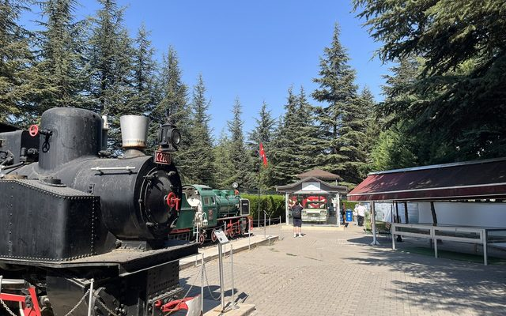
متحف سيارات دَفريمإسكي شهر · العهد الجمهوري متحف إلغيز للفن المعاصرإسطنبول · العصر الحاضرمتحف أمينة غوغوش للمطبخغازي عنتاب · عثماني / العصر الحاضر
متحف إلغيز للفن المعاصرإسطنبول · العصر الحاضرمتحف أمينة غوغوش للمطبخغازي عنتاب · عثماني / العصر الحاضر متحف بيت أتاتورك في أرضرومأرضروم · العهد الجمهوريمتحف الرسم والنحت في أرضرومأرضروم · العهد الجمهوري / معاصر
متحف بيت أتاتورك في أرضرومأرضروم · العهد الجمهوريمتحف الرسم والنحت في أرضرومأرضروم · العهد الجمهوري / معاصر متحف التحرير في إسكي شهيرإسكي شهر · العهد الجمهوريالمتحف الإثنوغرافيأنقرة · سلجوقي / عثماني / العهد الجمهوري
متحف التحرير في إسكي شهيرإسكي شهر · العهد الجمهوريالمتحف الإثنوغرافيأنقرة · سلجوقي / عثماني / العهد الجمهوري كشك أتاتورك البحري في فلورياإسطنبول · العهد الجمهوري
كشك أتاتورك البحري في فلورياإسطنبول · العهد الجمهوري متحف الغازيسامسون · العهد الجمهوري (1919)
متحف الغازيسامسون · العهد الجمهوري (1919) متحف بانوراما الدفاع عن غازي عنتابغازي عنتاب · العهد الجمهوري
متحف بانوراما الدفاع عن غازي عنتابغازي عنتاب · العهد الجمهوري متحف الشطرنج لوقف غوكيايأنقرة · العصر الحاضر
متحف الشطرنج لوقف غوكيايأنقرة · العصر الحاضر متحف ذاكرة 15 يوليوإسطنبول · العصر الحاضر
متحف ذاكرة 15 يوليوإسطنبول · العصر الحاضر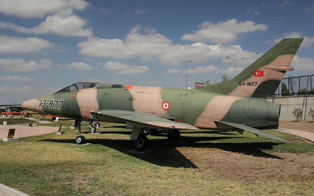
متحف القوات الجوية في أنقرةأنقرة · العهد الجمهوري نصب ومتحف شهداء الأتراك في إغديرإغدير · العهد الجمهوريمتحف شهداء 15 يوليو والديمقراطية في قهرمان قازانأنقرة · العصر الحاضرمتحف الزلازل في قنديليإسطنبول · العهد الجمهوري
نصب ومتحف شهداء الأتراك في إغديرإغدير · العهد الجمهوريمتحف شهداء 15 يوليو والديمقراطية في قهرمان قازانأنقرة · العصر الحاضرمتحف الزلازل في قنديليإسطنبول · العهد الجمهوري متحف قره جاسو الإثنوغرافيآيدن · العصر الحديث
متحف قره جاسو الإثنوغرافيآيدن · العصر الحديث متحف بيت أتاتورك في قيصريقيصري · العهد الجمهوري
متحف بيت أتاتورك في قيصريقيصري · العهد الجمهوري متحف بيت أتاتورك في قونيةقونية · العهد الجمهوريمتحف قونية الإثنوغرافيقونية · عثماني / العصر الحديثمتحف حرب الاستقلالأنقرة · العهد الجمهوريمتحف كوروكوبرو التذكاري وبيت أضنة التقليديأضنة · عثماني / العهد الجمهوري
متحف بيت أتاتورك في قونيةقونية · العهد الجمهوريمتحف قونية الإثنوغرافيقونية · عثماني / العصر الحديثمتحف حرب الاستقلالأنقرة · العهد الجمهوريمتحف كوروكوبرو التذكاري وبيت أضنة التقليديأضنة · عثماني / العهد الجمهوري متحف القوات الوطنيةباليكسير · العهد الجمهوريمتحف حجر الميرشوم (لوله طاش)إسكي شهر · عثماني / العصر الحاضرمتحف التعدينزونغولداق · القرن 19–20متحف بيت أتاتورك التذكاري والإثنوغرافيا في ملطيةملطية · العهد الجمهوري
متحف القوات الوطنيةباليكسير · العهد الجمهوريمتحف حجر الميرشوم (لوله طاش)إسكي شهر · عثماني / العصر الحاضرمتحف التعدينزونغولداق · القرن 19–20متحف بيت أتاتورك التذكاري والإثنوغرافيا في ملطيةملطية · العهد الجمهوري متحف البراءةإسطنبول · العصر الحاضرمتحف ومكتبة محمد عاكف أرصوي للأدبأنقرة · العهد الجمهوري
متحف البراءةإسطنبول · العصر الحاضرمتحف ومكتبة محمد عاكف أرصوي للأدبأنقرة · العهد الجمهوري بيت محمد عاكف أرصوي التذكاريإسطنبول · العهد الجمهوري
بيت محمد عاكف أرصوي التذكاريإسطنبول · العهد الجمهوري متحف بيت أتاتورك في مرسينمرسين · العهد الجمهوري
متحف بيت أتاتورك في مرسينمرسين · العهد الجمهوري ميني توركإسطنبول · العصر الحاضر
ميني توركإسطنبول · العصر الحاضر متحف بيت هدنة مودانيابورصة · العهد الجمهوريمتحف غازهانةإسطنبول · عثماني / العصر الحاضربيت أتاتورك المتحف في حاجي بكتاشنوشهر · العهد الجمهوري
متحف بيت هدنة مودانيابورصة · العهد الجمهوريمتحف غازهانةإسطنبول · عثماني / العصر الحاضربيت أتاتورك المتحف في حاجي بكتاشنوشهر · العهد الجمهوري متحف العلوم والتكنولوجيا في جامعة الشرق الأوسط التقنيةأنقرة · العصر الحاضر
متحف العلوم والتكنولوجيا في جامعة الشرق الأوسط التقنيةأنقرة · العصر الحاضر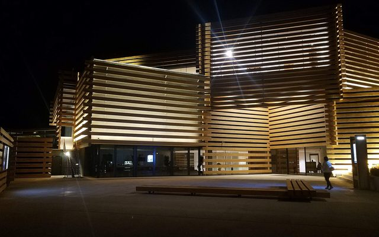
متحف أودون بازاري الحديثإسكي شهر · العصر الحاضر متحف رحمي م. كوتشإسطنبول · العصر الحديث
متحف رحمي م. كوتشإسطنبول · العصر الحديث متحف الرسم والنحتأنقرة · العهد الجمهوري
متحف الرسم والنحتأنقرة · العهد الجمهوري بيت أتاتورك المتحف في ريزهريزه · العهد الجمهوري
بيت أتاتورك المتحف في ريزهريزه · العهد الجمهوري متحف سعيد فائق أباسيانيقإسطنبول · العهد الجمهوريمتحف مدينة ماردين صاقب صابانجيماردين · عثماني / العهد الجمهوريمتحف صاقب صبانجيإسطنبول · عثماني / معاصرسالت غلطةإسطنبول · عثماني / العصر الحاضر
متحف سعيد فائق أباسيانيقإسطنبول · العهد الجمهوريمتحف مدينة ماردين صاقب صابانجيماردين · عثماني / العهد الجمهوريمتحف صاقب صبانجيإسطنبول · عثماني / معاصرسالت غلطةإسطنبول · عثماني / العصر الحاضر متحف الورق «سيكا»قوجه ايلي · العهد الجمهوري
متحف الورق «سيكا»قوجه ايلي · العهد الجمهوري متحف بيت أتاتورك والإثنوغرافيا في سيليفكهمرسين · العهد الجمهوريمتحف بيت أتاتورك في سلوانديار بكر · العهد الجمهوري
متحف بيت أتاتورك والإثنوغرافيا في سيليفكهمرسين · العهد الجمهوريمتحف بيت أتاتورك في سلوانديار بكر · العهد الجمهوري متحف أتاتورك والمؤتمر في سيواسسيواس · العهد الجمهوري (1919)
متحف أتاتورك والمؤتمر في سيواسسيواس · العهد الجمهوري (1919) متحف القاطرات البخارية المفتوح التابع للسكك الحديدية التركيةأنقرة · العهد الجمهوريبيت أتاتورك المتحف في مراتلي (تكيرداغ)تكيرداغ · العهد الجمهوريمتحف توفاش للعربات الأناضوليةبورصة · عثماني / العهد الجمهوريبيت أتاتورك والمتحف الإثنوغرافي في توقاتتوقات · عثماني / العهد الجمهوري
متحف القاطرات البخارية المفتوح التابع للسكك الحديدية التركيةأنقرة · العهد الجمهوريبيت أتاتورك المتحف في مراتلي (تكيرداغ)تكيرداغ · العهد الجمهوريمتحف توفاش للعربات الأناضوليةبورصة · عثماني / العهد الجمهوريبيت أتاتورك والمتحف الإثنوغرافي في توقاتتوقات · عثماني / العهد الجمهوري كشك أتاتورك في طرابزونطرابزون · العهد الجمهوري
كشك أتاتورك في طرابزونطرابزون · العهد الجمهوري متحف طرابزون (قصر كوستاكي)طرابزون · أوائل القرن 20 / متعدد الحقب
متحف طرابزون (قصر كوستاكي)طرابزون · أوائل القرن 20 / متعدد الحقب متحف الجمعية التركية للطيرانأنقرة · العهد الجمهوري
متحف الجمعية التركية للطيرانأنقرة · العهد الجمهوري متحف بنك إشإسطنبول · العهد الجمهوري
متحف بنك إشإسطنبول · العهد الجمهوري متحف سجن أولوجانلارأنقرة · العهد الجمهوري
متحف سجن أولوجانلارأنقرة · العهد الجمهوري متحف يحيى كمالإسطنبول · العهد الجمهوري
متحف يحيى كمالإسطنبول · العهد الجمهوري متحف بيت يوروك علي أفهآيدن · العهد الجمهوري
متحف بيت يوروك علي أفهآيدن · العهد الجمهوري متحف يلماز بيوك أرشن للتماثيل الشمعيةإسكي شهر · العصر الحاضر
متحف يلماز بيوك أرشن للتماثيل الشمعيةإسكي شهر · العصر الحاضر متحف النصرأفيون قره حصار · العهد الجمهوري
متحف النصرأفيون قره حصار · العهد الجمهوري متحف زكي مورين للفنونموغلا · العهد الجمهوري
متحف زكي مورين للفنونموغلا · العهد الجمهوري متحف الطاقة سانترال إسطنبولإسطنبول · العهد الجمهوريمتحف تشاملك للقاطرات البخاريةإزمير · عثماني / العهد الجمهوري
متحف الطاقة سانترال إسطنبولإسطنبول · العهد الجمهوريمتحف تشاملك للقاطرات البخاريةإزمير · عثماني / العهد الجمهوري متحف فنون الزجاج المعاصرإسكي شهر · العصر الحاضرمتحف تشنغل خان رحمي كوتشأنقرة · عثماني / العهد الجمهوري
متحف فنون الزجاج المعاصرإسكي شهر · العصر الحاضرمتحف تشنغل خان رحمي كوتشأنقرة · عثماني / العهد الجمهوري متحف إلتر أوزل للطب وطب الأسنانأضنة · العهد الجمهوريمتحف مقر قيادة معارك إينونوإسكي شهر · العهد الجمهوري
متحف إلتر أوزل للطب وطب الأسنانأضنة · العهد الجمهوريمتحف مقر قيادة معارك إينونوإسكي شهر · العهد الجمهوري متحف منزل عصمت إينونوإسطنبول · العهد الجمهوريمتحف إسطنبول البحريإسطنبول · عثماني / العهد الجمهوري
متحف منزل عصمت إينونوإسطنبول · العهد الجمهوريمتحف إسطنبول البحريإسطنبول · عثماني / العهد الجمهوري متحف الطيران في إسطنبولإسطنبول · العهد الجمهوري
متحف الطيران في إسطنبولإسطنبول · العهد الجمهوري متحف إسطنبول للفن الحديثإسطنبول · العهد الجمهوري / معاصر
متحف إسطنبول للفن الحديثإسطنبول · العهد الجمهوري / معاصر متحف إسطنبول للألعابإسطنبول · العصر الحاضرمتحف أتاتورك في إزميرإزمير · العهد الجمهوري
متحف إسطنبول للألعابإسطنبول · العصر الحاضرمتحف أتاتورك في إزميرإزمير · العهد الجمهوري مصنع الثقافة والفن في إزميرإزمير · العهد الجمهوري / معاصرمتحف الرسم والنحت في إزميرإزمير · العهد الجمهوري / معاصر
مصنع الثقافة والفن في إزميرإزمير · العهد الجمهوري / معاصرمتحف الرسم والنحت في إزميرإزمير · العهد الجمهوري / معاصر